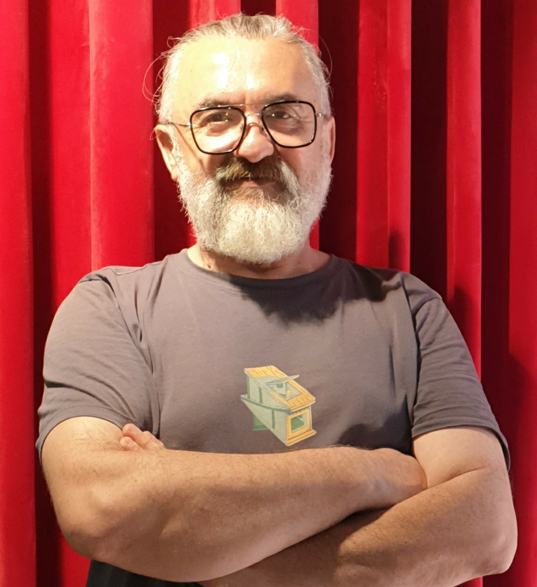

Birey ve sorumluluk
Bireysel tercih, özgürlük, ahlaki tutarlılık ve sorumluluk alanları.
- İnsan, Özgürlük ve Sorumluluk · İnceleme
- Sorumluluk Daireleri · İnceleme
- İrade ve Gerçek Özgürlük · Çalışma konusu
Toplum, Tarih ve Medeniyet
“İnsan her yerde aynı insandır; yaşamını sürdürebilmek için ürettiği şartlar farklılık gösterir.”— Adem Afşar
İnsanın temel yaşamsal ihtiyaçları ortak olabilir; ancak bu ihtiyaçları karşılamak için geliştirdiği kurumlar, değerler, ilişkiler ve toplumsal düzenler tarihsel ve coğrafi koşullara göre farklılaşır.
Sözlük: Noktalı alt çizgili akademik terimlere dokunarak kısa açıklamalarını okuyabilirsiniz. Diğer kelimelere dokunarak sözlükte arama bağlantısını açabilirsiniz.

Adem Afşar; sosyoloji, arkeoloji, tarih ve uluslararası dış ticaret ve lojistik yönetimi alanlarında lisans eğitimlerini tamamlamıştır. Sosyoloji alanında yüksek lisans eğitimini tez aşamasına kadar sürdürmüştür.
Toplumların tarihsel gelişimi, siyasal iktidarın oluşumu, birey ile toplum arasındaki ilişkiler, toplumsal sorumluluk ve birlikte yaşamanın koşulları üzerine araştırma ve yazı çalışmalarını sürdürmektedir.
Çalışmalarında tarihsel olayları yalnızca sonuçlarıyla değil, bu sonuçları ortaya çıkaran toplumsal koşullar, kurumsal yapılar ve insan davranışlarıyla birlikte değerlendirmeyi esas almaktadır.
Yayımlanmamış araştırma ve düşünce çalışmaları; göç ve mülteci politikaları, bu politikaları belirleyen irade ile uygulayıcı kurumlar arasındaki uyum, insan hakları ve kamu güvenliği ilişkisi, dışa görece kapalı yerleşimlerde toplumsal güç ilişkileri, kuşaklar arası cinsiyet algıları ve siyasal istikrar karşısında toplumsal beklentiler gibi konuları kapsamaktadır.
Ayrıntılı yazar biyografisiKitapları, kavramsal incelemeleri ve makale kayıtlarını tek yerden arayın. Arama yalnızca bu sitede listelenen içerikleri kapsar.
Aramak için bir kelime yazın.
Hangi yazıdan başlayacağınıza karar vermek için bir konu seçin. Bağlantılar, sitede zaten bulunan kitaplara, incelemelere ve makale kayıtlarına yönlendirir.
Bireysel tercih, özgürlük, ahlaki tutarlılık ve sorumluluk alanları.
Asabiyet, ortak hareket, toplumsal bağlar ve krizlere uyum.
Tarihsel süreklilik, toplumsal dönüşüm ve birikim.
Meşruiyet, yönetim, siyasal gerçekçilik ve kurumlar.
Bu harita bir konu keşif rehberidir. Bir eser birden fazla başlık altında bulunabilir. “Çalışma konusu” olarak işaretlenen başlıklar henüz yayımlanmış tam metin değildir.
Terimleri sınıflandırılmış olarak arayın. Bu dizin, sayfadaki dokunmatik açıklamalarla aynı kayıtları kullanır.
Bir kavramın genel anlamını, eserlerde ele alınışını ve uluslararası literatürle olası ilişkilerini ayrı ayrı inceleyin. Birbirini andıran ifadeler, farklı dönemlerde aynı kapsam ve anlama sahip olmak zorunda değildir.
Bir kavrama dokunarak açıklamasını açın:
İbn Haldun'un toplum kuramı
Bilimsel durum: Bu açıklamalar, kavramsal çalışma taslaklarıdır; eserlerin tam metinleri ve akademik kaynaklar karşılaştırılarak geliştirilecektir. Literatür benzerliği, etkilenme veya özgünlük kanıtı sayılmaz.
Toplumun kuruluşundan siyasal iktidarın işleyişine, tarihsel düşünürlerden çağdaş toplumsal sorunlara uzanan çalışmalar.
Mukaddime’nin Kuramsal Çerçevesi ve Tarihsel Uygulamaları
Kuruluş, güçlenme, refah ve çözülme; fetih, hanedan, rejim ve ideoloji değişimlerinin toplumun sürekliliğinden ayrılarak incelendiği karşılaştırmalı tarihsel sosyoloji çalışması.
Kitabın çalışma sayfasını açToplum, dayanışma ve medeniyet üzerine bir inceleme
Toplumların kuruluşu, asabiyet, dayanışma, üretim ve siyasal düzenin oluşumu üzerine tarihsel ve sosyolojik bir inceleme.
Kitap tamamlanmıştır. Yayın bilgileri kesinleştiğinde duyurulacaktır.
Seçilmiş okumaToplumu Kuran Güç ile İktidarı Koruyan Akıl
İki düşünürün toplum, iktidar ve siyasal gerçekçilik anlayışlarını karşılaştıran; benzerlikleri, ayrılıkları ve olası düşünsel etkileşim sorusunu inceleyen çalışma.
Yayın tarihi henüz kesinleşmemiştir.
Serideki diğer dört kitap planlama aşamasındadır. Kapaklar taslaktır; yayımlanmış eser olarak sunulmamaktadır.
Gücün sınırı, kurumların dengesi
Kuralların, kurumların ve siyasal gücün sınırlarının bireyler üzerindeki etkilerini araştıran taslak.
Seri tanıtımını okuDemokrasi, eşitlik ve birlikte yaşam
Demokratik karar alma, çoğunluğun etkisi ve azınlıkta kalan bireylerin ihtiyaçlarını incelemeyi amaçlayan çalışma.
Seri tanıtımını okuMeşruiyet, bürokrasi ve modern devlet
Modern kurumlarda yetki, kural, meşruiyet ve bilgiye erişim ilişkilerini araştırmayı amaçlayan çalışma.
Seri tanıtımını okuSorumluluk, toplumsal denge ve ortak yaşam
Sorumluluk çevreleri, toplumsal fayda ve ortak geleceğe ilişkin özgün önermeleri tartışmayı amaçlayan çalışma. Başlık ve kapsamı geçicidir.
Seri tanıtımını okuKavramları yalnızca açıklamakla yetinmek yerine, tarihsel ve toplumsal örnekler üzerinden değerlendirmeyi amaçlıyorum.
Altı kavramsal incelemenin ilk sürümleri yayımlanmıştır. Her çalışma bağımsız olarak okunabilir; aynı zamanda birey, toplum, tarih ve siyasal iktidar arasındaki ilişkileri birlikte ele alır.
Altı inceleme birbirinden bağımsız okunabilir. Aşağıdaki sıralamalar, konular arasında bağlantı kurmak isteyen okuyucular için öneridir; çalışmaların zorunlu okuma sırası veya akademik olarak kanıtlanmış bir neden-sonuç zinciri değildir.
Bu bölümde yer alan metinler, geliştirilmekte olan kavramsal incelemelerin ilk sürümleridir. Yazarın özgün düşünsel önermeleri, tarihsel düşünürlerin görüşlerinden ayrı biçimde ele alınmaktadır.
Sonraki sürümlerde akademik kaynaklandırma, doğrulanmış metin içi atıflar, sayfa numaraları, karşıt kuramsal yaklaşımlar ve tarihsel karşılaştırmalar genişletilecektir.
Güncel gelişmeleri insan davranışları, toplumsal sorumluluk ve ekonomik ilişkiler üzerinden ele alan kaynaklı düşünce yazıları.
Yönetim sürekliliğine kişisel tanıklık; salgın, savaşlar, büyüme ve enflasyon üzerine altı ülkenin resmî verileriyle kaynaklı bir değerlendirme.
Yazının tamamını oku →Adem Afşar; istikrar, yurttaşlık bilgisi, ortak şuur, eğitim, tüketim ve erdemin sürdürülebilme koşullarını tartışıyor.
· Adem Afşar · Sürüm 1.0
Yazıyı oku →Yayımlanan yazılarımı ve geliştirmekte olduğum araştırma konularını burada bulabilirsiniz. Başlığa veya konuya göre arama yapabilir, yayımlanma durumuna göre listeyi süzebilirsiniz.
7 kayıt gösteriliyor.
İnsan–Yapay Zekâ İlişkisinde Üretim Kapasitesinin Genişlemesi
Yapay zekâ rekabetini, insanın düşünme ve üretme kapasitesine kazandırdığı imkânlar üzerinden değerlendiren bir inceleme.
Makale · 30 Ekim 2026Yazar: Adem Afşar
Yayımlanma tarihi:
Çevrim içi kayıt: İlk yayımlanma tarihi belirtilmiştir. Ayrı bir sürüm numarası veya son güncelleme tarihi doğrulanmadığından burada gösterilmemektedir.
Anahtar kelimeler: Yapay zekâ; düşünsel sinerji; insan-makine etkileşimi; teknoloji sosyolojisi; dijital ekonomi; üretim kapasitesi; kullanıcı deneyimi.
Özet: Çalışma, yapay zekâ platformları arasındaki rekabeti ve insanın düşünme, öğrenme ve üretme kapasitesini geliştirmede yapay zekânın rolünü ele alır. İnsan ile yapay zekânın karşılıklı etkileşimine dayanan düşünsel sinerji yaklaşımını tartışır. Tam özet ve kaynakça makale sayfasındadır.
Önerilen kaynak gösterimi: Afşar, A. (2026, 30 Ekim). Yapay Zekâ Rekabetinden Düşünsel Sinerjiye: İnsan–Yapay Zekâ İlişkisinde Üretim Kapasitesinin Genişlemesi. Adem Afşar — Toplum, Tarih ve Medeniyet. https://afsarad.github.io/yapay-zeka-dusunsel-sinerji.html
Bireysel ihtiyaçlar ile ortak yaşamın gerekleri arasındaki ilişki.
Çalışma konusuKarar verme kapasitesi, çevrenin etkisi ve bireyin kendi davranışlarını değerlendirmesi.
Çalışma konusuGöç politikalarının belirlenmesi ve uygulanması, bireysel mağduriyetlerin korunması, kamu güvenliği ve kurumsal sorumluluk ilişkileri.
Yayımlanmamış araştırma konusuKüçük ve dışa görece kapalı yerleşimlerde güç ilişkilerinin olası suistimallerin görünürlüğüne etkileri.
Yayımlanmamış araştırma konusuCinsiyet kavramına yüklenen anlamların, toplumsal rollerin ve beklentilerin değişimi.
Yayımlanmamış araştırma konusuUzun süreli yönetimlerde kamusal hizmetler, hak ve yükümlülükler, beklentiler ve siyasal eleştirinin gerekçeleri.
Yayımlanmamış araştırma konusuAramanızla eşleşen kayıt bulunamadı. Başka bir sözcük deneyebilirsiniz.
Bu site, bağımsız araştırma ve yazı çalışmalarının okuyucuyla buluştuğu kişisel bir yayın alanıdır. Buradaki metinler, ayrıca belirtilmedikçe hakemli akademik dergi yayını olarak sunulmaz.
Birey, aile, yakın çevre ve daha geniş toplumsal sorumluluk alanları arasındaki ilişkiler.
Tarihsel değişim, toplumsal kurumlar, süreklilik ve dönüşüm süreçleri.
İktidarın kuruluşu, yönetim sorumluluğu, toplumsal fayda ve siyasal düşünce.
Özgürlük, normlar, dayanışma, toplumsal dayanıklılık ve birlikte yaşamanın koşulları.
Üniversiteler, araştırmacılar, yayınevleri, editörler ve kültür kurumları; metinler üzerine eleştiri, söyleşi, ortak çalışma önerisi veya yayın izni talebi için iletişime geçebilir. Başvuruların kabulü ya da ortaklık kurulması önceden taahhüt edilmez.
E-posta ile iletişime geçİncelemeler arasındaki bağlantılar, kavramların birbirinin aynısı olduğunu ileri sürmez. İlişkinin türünü ve hangi açıdan kurulduğunu okuyucuya açıkça gösterir.
İlk çalışma sorumluluğun yakınlığa göre farklılaşan alanlarını ele alırken ikincisi bireysel tercih ile ahlaki ve toplumsal sorumluluk ilişkisini tartışır. Birlikte okuma, öncelik ile yükümlülük arasındaki farkı görünür kılabilir.
Sorumluluk DaireleriÖzgürlük ve SorumlulukBirinde ortak hareketi mümkün kılan dayanışma, diğerinde krizler karşısında uyum ve kurumsal kapasite öne çıkar. Dayanışma ile dayanıklılık ilişkili olabilir; ancak aynı kavram veya zorunlu bir neden-sonuç ilişkisi değildir.
Asabiyet ve Ortak HareketToplumsal DayanıklılıkBenzer siyasal olayların farklı dönemlerde ortaya çıkması, koşullarının ve anlamlarının aynı olduğu sonucunu doğurmaz. Bu bağlantı, siyasal iktidarı incelerken tarihsel tekrar ile tarihsel özdeşliği ayırmayı önerir.
Döngü Değil, Sarmalİktidar ve Siyasal GerçekçilikBireyin yakın çevresine öncelik vermesi ile kamusal yetki kullanan kişinin toplumun geneline karşı yükümlülüğü aynı ölçütlerle değerlendirilebilir mi? Bu, kesin hüküm değil; iki çalışmayı bir arada okumaya açan araştırma sorusudur.
Sorumluluk Daireleriİktidar ve Siyasal GerçekçilikYöntem notu: Buradaki eşleştirmeler eser başlıkları ve sitede yer alan tanıtım metinleri üzerinden oluşturulmuş editoryal okuma önerileridir. Metinlerin tamamı karşılaştırılmadan yazarın kesin görüşü, doğrudan etkilenme, uluslararası literatürde özgünlük veya kanıtlanmış kuramsal ilişki olarak sunulmaz. Her çağın toplumsal kapsamı ayrıca değerlendirilir.
Bu arşivde gözlem, yorum, önerme, araştırma sorusu ve doğrulanmış bulgu birbirinden ayrılır. Aşağıdaki kayıtlar, eserlerimizin tanıtımlarından ve birlikte geliştirdiğimiz kavramsal tartışmalardan hareketle oluşturulmuş editoryal çalışma taslaklarıdır; tamamlanmış ampirik araştırma sonuçları değildir.
Kayıt ilkesi: Tarihi bilinmeyen bir gözleme tarih atanmaz; araştırma yapılmamışsa “bulgu” denmez. Her kaydın ilk yazılı kaynağı, doğrulama durumu ve sonraki değişiklikleri, belgeler elde edildikçe ayrı kaydedilir. Yüksek lisans tezi bu bölüme eklenmemiştir.
Bu kayıtlar geçmiş düşüncelerin bugünkü gözlemlerle özdeş olduğunu ileri sürmez. Kaynakta savunulan görüş, çağdaş yorumumuz, ortak tartışma noktası ve tarihsel kapsam farkı birbirinden ayrılır. Eserlerin tam metinleri karşılaştırılmadan etki, öncelik veya özgünlük kanıtı ileri sürülmez.
Bilimsel kayıt ilkesi: “Kaynakta bulunuyor” yalnızca kontrol edilmiş içerik için kullanılır. “Benziyor” doğrudan etkilenme anlamına gelmez. “Özgün katkı” ise ancak özgün eserler, önceki literatür ve çağdaş kapsam karşılaştırılarak gerekçelendirilebilir. Kayıtlar çalışma taslağıdır; yüksek lisans tezi bu bölüme eklenmemiştir.
Bu matris, yazarın yaşadığı çağdaki gözlemlerini geçmiş kuramlarla özdeşleştirmeden incelemek için hazırlanmıştır. İfade benzerliği, aynı kapsam veya aynı sonuç demek değildir. Buradaki “olası katkı” ifadeleri kanıtlanmış özgünlük iddiası değildir.
Yöntem notu: Her kayıtta “gözlem”, “yazarın yorumu”, “literatürdeki yaklaşım” ve “test edilmesi gereken önerme” ayrı tutulur. Yeni olduğu kanıtlanmamış düşünceler için “özgünlüğü doğrulandı” ifadesi kullanılmaz. Yüksek lisans tezi izinsiz yayımlanmaz veya bu matrise aktarılmaz.
Bu bölümün amacı, önermelerimizi yalnızca destekleyen düşüncelerle değil, sınırlarını gösteren karşı görüşlerle de sınamaktır. Karşıt görüş, otomatik olarak çürütme; benzer görüş, otomatik olarak doğrulama değildir. Her kayıt çağdaş gözlemin tarihsel bağlamını ayrı tutar.
Yöntem notu: Bu kartlardaki “eleştirel itiraz” cümleleri, belirtilen literatürün birebir alıntısı değildir; karşılaştırmalı değerlendirme için formüle edilmiş sorulardır. Kaynakların desteklediği görüşler ile yazarın önermeleri ayrı tutulur.
Bir önermeyi yalnızca doğrulayan örnekleri değil, yeniden değerlendirmemizi gerektirecek bulguları da belirtiyoruz. Yazarın düşünsel önermeleri ile yüksek lisans tezinde raporlanan saha verileri birbirinin yerine kullanılmaz. Benzerlik, tarihsel ve kavramsal özdeşlik değildir.
Yazarın “Kuşaklarda Toplumsal Cinsiyet Algısı: Kütahya Örneği” başlıklı tez çalışmasında 234 kişiyle yürütülen anket ve Toplumsal Cinsiyet Rolleri Tutum Ölçeği kullanılmıştır. Tezin sonuç bölümünde, toplam tutum puanı ortalaması 117,48 olarak raporlanmış; kuşak gruplarının ortalamaları Bebek Patlaması için 71,67, X için 103,45, Y için 119,16, Z için 121,24 olarak verilmiştir. Bunlar tezde raporlanan örneklem bulgularıdır; toplumun tümüne ilişkin kesin yargılar değildir.
Tezin sonuçlarında eğitim düzeyine ve çalışma durumuna ilişkin hipotezlerin, karşılaştırılan ortalamalar arasında istatistiksel olarak anlamlı fark saptanmaması nedeniyle reddedildiği belirtilir. Bu örnek, beklenen ilişkiyi desteklemeyen bulguların da açıkça kaydedilmesi ilkemizi somutlaştırır.
Yöntemsel sınır: Tez örnekleminde kuşakların payları eşit değildir: Bebek Patlaması %2,6; X %8,5; Y %46,6; Z %42,3. Bu nedenle bulgular yorumlanırken grup büyüklükleri, örnekleme yöntemi ve yaş–dönem–kuşak ayrımı dikkate alınmalıdır. Kesitsel karşılaştırma tek başına kuşak üyeliğinin tutum farklılıklarına neden olduğunu kanıtlamaz. Tez verileri, yukarıdaki dört kuramsal önermenin doğrudan sınanması olarak gösterilmemektedir.
Kaynak ve izin: Adem Afşar, Kuşaklarda Toplumsal Cinsiyet Algısı: Kütahya Örneği, yazar tarafından sağlanan yüksek lisans tezi metni; özet, yöntem ve sonuç bölümleri. Burada yalnızca sınırlı araştırma bulguları aktarılmıştır; tezin tam metni yayımlanmamıştır. Bibliyografik künyenin eksik unsurları doğrulanmadan eklenmeyecektir.
Bir düşüncenin neye dayandığını ve hangi ölçüde sınandığını birbirinden ayırıyoruz. Bu kayıtlar bilimsel doğruluğa sayısal puan vermez; kanıtın türünü, kapsamını ve eksiklerini görünür kılar. Tarihsel benzerlik, çağdaş kapsamın özdeşliği anlamına gelmez.
Yayın ilkesi: Bu kayıtlardaki “henüz doğrulanmadı” ifadesi, bir önermenin yanlış olduğu anlamına gelmez; ilgili doğrulama çalışmasının burada sunulmadığını bildirir. Yeni kanıt ortaya çıktığında kayıt tarihi, kaynak, yöntem ve değişiklik gerekçesiyle güncellenecektir.
Her çalışma, ayrı bir araştırma dosyası numarasıyla izlenir. Dosya numarası bir yayın, DOI, ISBN veya hakemlik onayı değildir. Kaynakların bir önermeyle ilişkisi; kuramsal yakınlık, eleştirel karşılaştırma, tarihsel bağlam, yöntemsel örnek ya da doğrudan ampirik bulgu olarak ayrıştırılır. Bu kayıtlar, tamamlanmış literatür incelemesi değil, denetlenebilir araştırma altyapısıdır.
Bu liste çalışma bibliyografyasıdır; metinlerin tümü sayfa ve baskı düzeyinde karşılaştırılmış değildir. Kayıt kodları yalnızca bu sitedeki dahili referans numaralarıdır.
Kaynak denetim ilkesi: Bir kaynağın listede bulunması, yazarın önermesini desteklediği veya etkilediği anlamına gelmez. Gelecekte her atıf için kullanılan baskı/çeviri, sayfa veya bölüm, kaynağın tam iddiası, bizim yorumumuz, benzerlik-farklılık, inceleme tarihi ve doğrulama durumu ayrıca kaydedilecektir. Doğrulanmamış sayfa numarası, DOI veya alıntı üretilmeyecektir.
Bu kayıtlar her ifadenin kime ait olduğunu, hangi araştırma dosyasına bağlandığını, mevcut dayanağını, kaynağın gerçekten neyi desteklediğini ve neyin henüz doğrulanmadığını gösterir. Bir kaynakla tematik yakınlık, doğrudan kanıt veya düşünsel etkilenme olarak sunulmaz.
Atıf denetim kuralı: Doğrudan alıntı ancak metin, baskı/çeviri ve sayfa doğrulandıktan sonra kullanılabilir. Özet/parafraz kaynak görüşü olarak sunulacaksa özgün pasajla karşılaştırılmalıdır. Yazarın çıkarımı, kaynağın sözüymüş gibi yazılamaz. İddia kayıtları bilimsel onay ya da hakemlik göstergesi değildir.
Güncelleme yöntemi: Her yeni doğrulamada kayıt kodu korunur; kullanılan baskı, sayfa veya bölüm, inceleme tarihi, karşıt kanıt ve değişiklik gerekçesi eklenir. Bu ilk sürümde doğrulanmamış sayfa, DOI veya birebir alıntı eklenmemiştir.
Bu bölüm araştırma dosyalarının mevcut belgelenmiş durumunu, bir sonraki bilimsel adımı ve yayın öncesi denetim koşullarını gösterir. Aşağıdaki durumlar hakem değerlendirmesi veya yayıma kabul anlamına gelmez; eksik bilgiler tamamlanmadan “yayına hazır” etiketi kullanılmaz.
Yayın hazırlık ilkesi: Bu kayıtların hiçbiri yalnızca sitede yer aldığı için “makale tamamlandı”, “hakemli yayın” veya “bağımsız doğrulandı” olarak tanımlanmaz. Her dosyanın yayın durumu yeni kanıt ve belgeyle ayrıca güncellenir.
Aşağıdaki kayıtlar makale yazım iskeletleridir; tamamlanmış, yayımlanmış veya hakem değerlendirmesinden geçmiş makaleler değildir. Başlıklar çalışma başlığıdır. Eksik veri ve henüz incelenmemiş kaynaklar tamamlanmış gibi gösterilmez.
Önerilen makale omurgası: Başlık → Öz → Anahtar sözcükler → Giriş ve problem → Literatür ve kavramsal çerçeve → Yöntem → Bulgular / kuramsal çözümleme (çalışma türüne göre) → Tartışma ve karşıt görüşler → Sınırlılıklar → Sonuç → Kaynakça. Bölümlerin içeriği gerçek çalışma ve kanıt tamamlandıkça yazılır.
Tez kaydı: YD-005 yalnızca tezden türetilebilecek bir makale planıdır. Tezin tam metni, katılımcı düzeyinde veri veya doğrulanmamış sonuçlar burada yayımlanmaz.
Bu harita, kitaplar, tez, araştırma önermeleri ve makale planları arasında konu, yöntem ve araştırma sorusu düzeyindeki olası bağlantıları görünür kılar. Bir bağlantı kanıt, doğrulanmış alıntı, yayımlanmış atıf veya doğrudan etkilenme anlamına gelmez. Kayıtlar taslaktır ve yeni metin incelemesiyle değiştirilebilir.
| Başlangıç çalışması | İlişkili çalışma | İlişkinin niteliği | Denetim gereksinimi |
|---|---|---|---|
| AR-001 · Sorumluluk Daireleri | AR-004 · Kamusal Yetki ve Sorumluluk | Kavramsal yakınlık: sorumluluğun kapsamı ve öncelik ölçütleri | Bireysel ve kamusal yükümlülüklerin farklı tanımlarını örnek olaylarla karşılaştırmak |
| AR-002 · Döngü Değil, Sarmal | AR-003 · Asabiyet ve Ortak Hareket | Tarihsel karşılaştırma: kavramların değişen kurum ve bağlamlarda anlamı | İbn Haldun'un tarihsel kavramlarını çağdaş kolektif eylemle özdeşleştirmemek |
| AR-005 · Kuşaklarda Toplumsal Cinsiyet Algısı | AR-002 · Döngü Değil, Sarmal | Yöntemsel katkı: kuşak/kohort karşılaştırmalarında bağlam ve örneklem sınırları | Tezdeki istatistiksel bulguları tarih felsefesi önermesinin kanıtı saymamak |
| AR-001 – AR-005 | YD-001 – YD-005 makale taslakları | Yayın planı: araştırma dosyalarının ayrı türlerde makale tasarımlarına aktarılması | Her makalenin yöntemi, kanıtı ve kaynakçası bağımsız olarak tamamlanmalı |
Kitaplarla bağlantı ilkesi: Kitaplar bölümündeki eserlerle somut metin ve sayfa karşılaştırması tamamlanmadan burada kesin “şu kitap bu tezi kanıtlıyor” veya “şu eser bu esere atıf yapıyor” bağlantısı kurulmaz. Geçici kitap başlıkları, doğrulanmış yayın künyesi gibi değerlendirilmez.
Güncelleme usulü: Her BA bağlantısı için metin/sayfa karşılaştırması, varsa alıntının özgün kaynağı, ilişkiyi destekleyen veya zayıflatan bulgu ve son inceleme tarihi ayrıca kaydedilecektir. Bu sürümde hiçbir bağlantı doğrulanmış bibliyografik atıf olarak işaretlenmemiştir.
Eserin yazılmış olması, yayımlanmış olması ve akademik değerlendirmeden geçmiş olması farklı durumlardır. Aşağıdaki kayıtlar, sitedeki eser ve araştırma dosyalarını birbirine karıştırmadan izlemek için hazırlanmıştır. Bu kayıtlar bir yayın kataloğu veya resmî bibliyografik veri tabanı değildir.
Kayıt kodları yalnızca bu sitenin iç düzeni içindir; ISBN, DOI, ORCID, ulusal tez numarası veya başka bir resmî tanımlayıcı yerine geçmez. Sonraki güncellemede her eser için "son doğrulama tarihi" ve belgeye dayalı kayıt eklenebilir.
Bu ilkeler, Adem Afşar'ın araştırma ve yayın hazırlıklarında izlenmesi hedeflenen çalışma usulleridir. Bir etik kurul onayı, hakem değerlendirmesi veya kurumsal sertifikasyon beyanı değildir. Yayınlanacak her metin ayrıca kendi koşullarında denetlenir.
Doğrudan alıntılar tırnak içinde, eser ve mümkünse sayfa bilgisiyle sunulur. Özetleme ve yorum açıkça ayrılır. Bir düşünürün görüşü, bizim önermemizi doğruluyormuş gibi gösterilmez.
Denetim: Özgün metin, baskı, çeviri ve sayfa bilgisi karşılaştırılır; doğrulanamayan atıflar taslakta işaretlenir.
Kuramsal önerme, kişisel gözlem, literatür yorumu ve ampirik bulgu ayrı etiketlenir. İstatistiksel anlamlılık, nedensellik veya temsil gücü anlamına gelecek biçimde genişletilmez.
Denetim: İddia–kanıt kayıtları ve kanıt durumları karşılıklı kontrol edilir.
Kütahya örneklemli tez çalışmasından yararlanırken bireyleri tanımlayabilecek ham yanıtlar, iletişim bilgileri ve küçük alt gruplara ait ifşa riski taşıyan ayrıntılar yayımlanmaz. Alıntı ve tablo kullanımı için izin, anonimleştirme ve ilgili yükümlülükler ayrıca değerlendirilir.
Denetim: Kamusal paylaşım öncesinde veri koruma ve araştırma etiği açısından gözden geçirme yapılır.
Alıntıların, kaynakların ve yorumların doğruluğu yazara aittir. Kaynak künyeleri ve önemli iddialar yayımlanmadan önce bağımsız biçimde kontrol edilir.
Denetim: Doğrulanmamış bilgi kesin bulgu olarak sunulmaz.
Kitap metninin tamamlanması, basılmış olması veya hakemli yayından geçmesi aynı şey değildir. ISBN, DOI, yayınevi, üniversite ve yayın tarihleri yalnızca doğrulanmışsa gösterilir.
Denetim: Eser kimlikleri yayından önce yeniden incelenir.
Maddi hata, eksik kaynak, yanlış aktarım veya haklı eleştiri tespit edilirse ilgili metin güncellenir. Anlamı etkileyen düzeltmelerde tarih, değişiklik gerekçesi ve önceki sürüm bilgisi korunur; sessizce geçmiş değiştirilmez.
Denetim: Site değişiklikleri ile eserlerin düşünsel revizyonları ayrı kaydedilir.
Durum: Bu bölüm bir çalışma politikası taslağıdır; tüm geçmiş eserlerin bu denetimlerden geçtiği iddia edilmez. Nihai yayın öncesinde her eser için ayrı kontrol yapılacaktır.
Bu rehber, sitedeki her metnin aynı türden bilgi sunmadığını açıklamak için hazırlanmıştır. Okuyucu, düşünsel önerme ile saha bulgusunu, tamamlanmış metin ile yayımlanmış eseri ve kaynak karşılaştırması ile doğrudan kanıtı ayırt edebilir.
Bir kitabın tamamlanmış olması, basıldığı veya hakem denetiminden geçtiği anlamına gelmez. Her eserin çalışma ve yayın durumu ayrı kontrol edilmelidir.
Başlangıç: Kitaplar ve eserler arası ilişkiler.
Önerme, sınanmaya açık bir yorum veya gerekçelendirilmesi gereken normatif görüş olabilir. Yalnızca bir düşünürle benzerlik göstermesi onu doğrulamaz.
Başlangıç: Önermeler, karşıt görüşler ve sınama tasarımları.
İki yazarın benzer meseleleri ele alması, aralarında doğrudan etkilenme veya aynı tarihsel anlam bulunduğunu kanıtlamaz. Kaynakların doğrulanma düzeyi ayrıca belirtilir.
Başlangıç: Akademik karşılaştırmalar ve araştırma dosyaları.
“Kuşaklarda Toplumsal Cinsiyet Algısı: Kütahya Örneği” araştırmasındaki örneklem bulguları, yöntem ve örneklem sınırları içinde yorumlanmalıdır. Bir bulgu bütün kuşaklara veya Türkiye nüfusuna otomatik olarak genellenemez.
Başlangıç: AR-005 tez kaydı ve kanıt kayıtları. Tam tez metni burada yayımlanmamaktadır.
Makale iskeleti araştırmanın planını gösterir; tamamlanmış sonuç, dergi kabulü veya DOI bulunduğunu göstermez. Eksik yöntem ve kaynak kontrolleri açıkça kayıt altındadır.
Başlangıç: Makale taslakları ve yol haritası.
Yazarın özgün yorumu, kaynaktan aktarılan bilgi, araştırma bulgusu ve doğrulama bekleyen ifade farklı kayıt türleridir. Bir kaynağın listelenmesi tek başına doğrulama sayılmaz.
Başlangıç: İddia–kanıt eşleştirmesi ve yayın etiği.
Okuyucuya açıklama: Bu sayfadaki araştırma kodları site içi takip içindir. Bunlar resmî yayın numarası, hakem kararı veya akademik onay anlamına gelmez. İçeriklerin bir kısmı araştırma taslağıdır; yayın öncesi doğrulama devam etmektedir.
Bu kayıt, sitenin yayıma hazır olduğu iddiası değildir. Yayın öncesinde doğrulanması gereken içerik, kaynak, bağlantı ve erişilebilirlik konularını görünür kılar. Teknik dosya denetimi ile canlı tarayıcı testleri birbirinden ayrıdır.
Yazar onayı bekleniyor
İlk iki kitap dışındaki dört kapak ve kitap başlığı kesinleşmiş bibliyografik eser gibi sunulmamalıdır. Kitapların yazım, tamamlanma ve yayımlanma durumları ayrı doğrulanmalıdır.
Eser kimliklerini inceleKaynak denetimi gerekli
Literatür benzerliği, doğrudan etki ve kanıt birbirinden ayrılmalıdır. Tam metin, baskı, sayfa ve alıntı doğrulaması tamamlanmadan kesin atıf iddiasında bulunulmamalıdır.
İddia kayıtlarını inceleYayın kapsamı sınırlı
Tezden yalnızca gerekli yöntemsel ve toplulaştırılmış bilgiler kullanılmalıdır. Katılımcı gizliliği, küçük alt gruplar ve bulguların genellenebilirliği ayrıca kontrol edilmelidir.
Etik ilkeleri inceleDepo üzerinde doğrulama bekliyor
Bu HTML dosyası, ayrı sayfalara ve görsellere göreli bağlantılar içerir. GitHub deposunda bunların tümünün bulunduğu ve adlarının büyük/küçük harf bakımından eşleştiği ayrıca kontrol edilmelidir.
Kitap bağlantılarına dönGerçek cihaz testi bekliyor
Uzun ana menü, klavye odağı, metin büyütme, arama, paylaşma ve küçük ekranlarda kaydırma davranışı Android ve masaüstü tarayıcılarında sınanmalıdır.
Okuyucu rehberini açHenüz yayıma onay verilmedi
İçerik onayı, doğrulanmış kaynaklar, gerçek depo dosyaları ve tarayıcı testleri tamamlanmadan bu taslak canlı sitenin yerine geçirilmemelidir.
Sürüm günlüğüne gitBu bölüm, doğrulanan teknik özelliklerle henüz incelenmemiş akademik ve bibliyografik bilgileri ayırır. Denetim kayıtları bir kalite güvencesi planıdır; bütün içeriklerin doğrulandığı anlamına gelmez.
İlk iki çalışma dışındaki dört kitap başlığı ve kapak, yazar tarafından kesinleştirilmedi. Bunlar taslak olarak kalmalı; yayımlanmış eser gibi gösterilmemelidir.
İbn Haldun, Mannheim, Gilligan, Noddings, Singer ve diğer düşünürlerle karşılaştırmalarda tam eser, baskı ve sayfa doğrulaması yapılmadan doğrudan alıntı veya etkilenme iddiası kurulamaz.
Tezdeki bulgular yalnızca raporlandıkları örneklem ve yöntem çerçevesinde sunulmalıdır. Resmî tez künyesi, istatistiksel tablolar ve alıntıların özgün metinle eşleşmesi yayın öncesinde kontrol edilecektir.
Aynı düşünce farklı araştırma kayıtlarında yer alabilir. Bu kayıtların işlevleri ayrı tutulmalı; kamuya açık anlatımda tekrarlar azaltılıp ayrıntılar ilgili dosyalara yönlendirilmelidir.
Bu HTML taslağında aşağıdaki dosya yolları kullanılmaktadır. Yolların metin içinde bulunması, GitHub deposunda gerçekten mevcut olduklarının doğrulanması değildir.
| Tür | Dosyalar | Kontrol |
|---|---|---|
| Kapaklar | kitap-1-on-kapak.jpg – kitap-6-on-kapak.jpg | Altı dosyanın adları, görselleri ve onaylı başlıkları karşılaştırılacak. |
| Portre ve çalışma odası | adem-afsar-orijinal.jpg, images/calisma-odasi.png | Dosya konumu ve görüntüleme izinleri denetlenecek. |
| Bağımsız HTML sayfaları | Kitap serisi, kitap okuması ve düşünce yazılarına yönlenen dokuz farklı .html yolu | Her hedef dosyanın depoda bulunması ve açılması ayrıca doğrulanacak. |
Bir düşünceyi anlamak için bütün akademik dosyaları baştan sona okumak zorunda değilsiniz. Aşağıdaki kısa açıklamalardan başlayabilir, ilginizi çeken başlığın ayrıntılarını açabilir ve özgün araştırma kayıtlarına geçebilirsiniz. Bu kartlar araştırmaların özeti ve yönlendirmesidir; doğrulanmış bilimsel sonuç ilanı değildir.
İnsanın kendisine ve yakınlarına karşı öncelikli sorumlulukları olabilir. Ancak bu yakınlık, daha uzak insanlara ve ortak dünyaya yönelik sorumluluğunu ortadan kaldırmaz.
İç içe geçmiş halkalar, sorumlulukların yokluğunu değil, koşullara göre değişen önceliğini anlatır. Yakınlığa dayalı önceliğin hangi durumda adaletle çatıştığı ayrıca tartışılmalıdır.
Tarihte birbirine benzeyen olaylar yaşanabilir; fakat aynı görünen olayın farklı çağlarda aynı toplumsal anlamı taşıdığı varsayılamaz.
Karşılaştırma yapılırken dönemlerin kurumları, koşulları ve aktörleri hesaba katılmalıdır. Bu yaklaşım, tarihsel sürekliliğin bulunmadığı iddiası değildir.
Birlikte hareket etme kapasitesi, yalnızca bir gruba ait olma duygusundan mı doğar; yoksa güven, kurumlar ve ortak hedefler de gerekli midir?
İbn Haldun'un asabiyet kavramı, çağdaş kolektif eylem tartışmalarıyla karşılaştırılabilir. Ancak kavramların tarihsel bağlamı ve kapsamı eşit kabul edilmez; dayanışmanın her zaman yararlı olduğu da varsayılmaz.
Bir kişi kamusal görev üstlendiğinde, sorumluluğu yalnızca kendi yakın çevresiyle sınırlı kalabilir mi? Yetki arttıkça hesap verme yükümlülüğü nasıl değişir?
Niyet, çaba, görev yükümlülüğü ve sonuç birbirinden ayrılarak incelenmelidir. Bu metin bir yönetim performansı ölçümü değil, araştırılması gereken normatif çerçevedir.
Kütahya örnekleminde kuşaklar ve toplumsal cinsiyet tutumları üzerine yürütülen tez çalışması, kuramsal önermelerden farklı olarak katılımcılardan elde edilen araştırma verilerine dayanır.
Örneklem özellikleri, kullanılan ölçme aracı, analizler ve sınırlılıklar birlikte değerlendirilmelidir. Tez bulguları başka düşünsel önermelerin doğrudan kanıtı sayılmaz; tam metin ve katılımcı verileri burada yayımlanmaz.
Üçüncü katman — Kaynak denetimi: Kartlarda geçen kavramların akademik karşılaştırmalarını kaynak kayıtlarında, her iddianın kanıt durumunu iddia eşleştirme sisteminde ve henüz yapılması gerekenleri yayın öncesi denetimde inceleyebilirsiniz. Kaynakların tümü sayfa düzeyinde doğrulanmış değildir.
Bu kayıt, taslağın kendi içinden çıkarılmış dosya envanterini ve yayımlamadan önce çözülmesi gereken bilgi eksiklerini gösterir. Dosya adının HTML içinde geçmesi, dosyanın GitHub'da bulunduğu veya içeriğinin onaylandığı anlamına gelmez.
İbn Haldun, Mannheim, Gilligan, Noddings, Singer ve diğer düşünürlerle kurulan bağlar karşılaştırma önerisi olarak değerlendirilir. Birincil eser, baskı, sayfa ve bağlam kontrolü tamamlanmadan doğrudan etkilenme, kesin benzerlik veya ampirik doğrulama iddiası kurulmaz. Yazarın önermesi, kaynak yazarının ifadesi ve editoryal yorum birbirinden ayrılır.
Tez bulguları yalnızca çalışmanın örneklemi ve yöntemi çerçevesinde sunulur; kişisel katılımcı verileri yayımlanmaz.
Bu sürümün hazırlanması sırasında HTML'de 8 yerel görsel/dosya yolu ve 9 bağımsız HTML hedefi tespit edildi. Aşağıdaki kayıtların GitHub deposuyla birebir eşleştirilmesi gerekmektedir.
| Dosya yolu | Tür | Denetim durumu |
|---|---|---|
adem-afsar-orijinal.jpg | Görsel | GitHub doğrulaması bekliyor |
images/calisma-odasi.png | Görsel | GitHub doğrulaması bekliyor |
kitap-1-on-kapak.jpg | Görsel | GitHub doğrulaması bekliyor |
kitap-2-on-kapak.jpg | Görsel | GitHub doğrulaması bekliyor |
kitap-3-on-kapak.jpg | Görsel | GitHub doğrulaması bekliyor |
kitap-4-on-kapak.jpg | Görsel | GitHub doğrulaması bekliyor |
kitap-5-on-kapak.jpg | Görsel | GitHub doğrulaması bekliyor |
kitap-6-on-kapak.jpg | Görsel | GitHub doğrulaması bekliyor |
asabiyet-ve-ortak-hareket.html | HTML sayfası | GitHub doğrulaması bekliyor |
dongu-degil-sarmal.html | HTML sayfası | GitHub doğrulaması bekliyor |
ibni-haldunu-anlamak.html | HTML sayfası | GitHub doğrulaması bekliyor |
iktidar-siyasal-gercekcilik.html | HTML sayfası | GitHub doğrulaması bekliyor |
insan-ozgurluk-sorumluluk.html | HTML sayfası | GitHub doğrulaması bekliyor |
sorumluluk-daireleri.html | HTML sayfası | GitHub doğrulaması bekliyor |
toplum_iktidar_duzen_kitap_serisi.html | HTML sayfası | GitHub doğrulaması bekliyor |
toplumsal-dayaniklilik.html | HTML sayfası | GitHub doğrulaması bekliyor |
yapay-zeka-dusunsel-sinerji.html | HTML sayfası | GitHub doğrulaması bekliyor |
Yayın kararı: Beklemede. Bu kontrol listesi tamamlanmış bir denetim sertifikası değildir.
Bu sayfanın akademik kayıtları İngilizce sayfada da kullanılabilecek biçimde hazırlanmıştır. Bu bölüm bir İngilizce çeviri veya yayımlanmış İngilizce sayfa değildir. İki dilde aynı araştırma kimlikleri, kanıt durumları, yayın statüleri ve düzeltme geçmişi korunmalıdır.
Circles of Responsibility
Yakınsal öncelik, dış halkalara karşı sorumluluğu kendiliğinden ortadan kaldırmaz. İngilizce açıklamada priority ile exclusion ayrımı korunmalıdır.
Not a Cycle, but a Spiral
Tarihsel benzerlik, anlam veya koşulların özdeşliği değildir. Çeviride metaforun açıklama sınırları korunmalıdır.
Asabiyyah and Collective Action
Asabiyyah tarihsel bir kavram olarak korunur; solidarity ile tam eşanlamlı sayılmaz.
Public Authority and Responsibility
Yetki, hesap verebilirlik, çaba ve sonuç ayrı değerlendirme alanlarıdır; tek bir kavrama indirgenmemelidir.
Perceptions of Gender Across Generations: The Case of Kütahya
Bu İngilizce başlık yalnızca öneridir; resmî tez başlığı veya onaylı çeviri değildir. Saha bulguları, örneklem sınırları ve istatistiksel yorumlar her iki dilde de aynı kalmalıdır.
| Türkçe çalışma adı | İngilizce çalışma karşılığı | Yayın öncesi kontrol |
|---|---|---|
| İbn-i Haldun’u Anlamak | Understanding Ibn Khaldun | Metin tamamlanmış; nihai İngilizce ad, yayınevi ve yayın bilgisi onaylanmalı. |
| İbn-i Haldun ve Machiavelli | Ibn Khaldun and Machiavelli | İkinci kitabın kesin Türkçe adı ve alt başlığı henüz onaylanmalı. |
| Serideki diğer dört taslak kitap adı | Henüz çevrilmeyecek. | Önce yazarın gerçek eser başlıkları ve kapakları doğrulanmalı; öneri adlar yayımlanmış eser gibi gösterilmemeli. |
hreflang veya karşılıklı dil bağlantısı eklenmez.Mevcut durum: Türkçe ana taslağa eşleştirme rehberi eklenmiştir. İngilizce HTML dosyası bu sürümde üretilmemiştir; karşılıklı dil bağlantıları, kesinleşmemiş eser adları ve akademik atıflar otomatik yayımlanmamıştır.
Bu denetim iki taslağın bölüm kimlikleri, kavram karşılıkları, araştırma kodları ve yayın statülerini karşılaştırır. İngilizce sürüm daha kısa bir editoryal uyarlamadır; metinler henüz paragraf düzeyinde eşdeğer değildir.
| Ortak kayıt | Türkçe kavram | English working title | Kanıt / çalışma durumu |
|---|---|---|---|
| AR-001 · IE-001 · YD-001 | Sorumluluk Daireleri | Circles of Responsibility | Kuramsal önerme / Conceptual proposition |
| AR-002 · IE-002 · YD-002 | Döngü Değil, Sarmal | Not a Cycle, but a Spiral | Tarihsel yorum önerisi / Interpretive historical proposition |
| AR-003 · IE-003 · YD-003 | Asabiyet ve Ortak Hareket | Asabiyyah and Collective Action | Araştırma sorusu / Research question |
| AR-004 · IE-004 · YD-004 | Kamusal Yetki ve Sorumluluk | Public Authority and Responsibility | Normatif önerme / Normative proposition |
| AR-005 · IE-005 · YD-005 | Kuşaklarda Toplumsal Cinsiyet Algısı: Kütahya Örneği | Perceptions of Gender Across Generations: The Case of Kütahya | Tezde raporlanan saha araştırması / Empirical research reported in a thesis |
Denetim sonucu: Yapısal bölüm kimlikleri eşleşiyor; içerik eşdeğerliği, bibliyografik doğrulama, eser adları ve canlı bağlantılar henüz yayın onayı almamıştır.
Bu kayıt, akademik etkinliklere ilişkin hazırlıkları belgeler. Taslak bildiri, başvuru, kabul, sunum ve yayın birbirinden ayrı aşamalardır. Aşağıdaki kayıt herhangi bir kabul veya sunum iddiası içermez.
Durum: Kavramsal bildiri adayı; henüz gönderilmedi
Bağlantılı araştırma: AR-001 Sorumluluk Daireleri; AR-004 Kamusal Yetki ve Sorumluluk
Araştırma sorusu: Yapay zekâ aracılı kararlar bireysel, kurumsal ve kamusal sorumluluğun sınırlarını nasıl etkiler?
Önerilen yöntem: Kavramsal çözümleme; hukuk, etik ve sosyoloji literatürüyle karşılaştırma
Gerekli kontroller: Etkinlik kapsamı, özet kuralları, kaynakların birincil metinleri, özgün katkı ve yazar onayı
Yayın durumu: Başvuru, kabul, sunum veya bildiri kitabı yayını bulunmuyor; ileride değişirse tarih ve kanıtla güncellenecek
Yapay zekâ destekli karar sistemlerinin istihdam, kamu hizmetleri ve kurumsal yönetimde yaygınlaşması, kararın sonuçlarından kimin ve hangi gerekçeyle sorumlu tutulacağını yeniden tartışmaya açmaktadır. Bu bildiri, bireyden başlayarak yakın çevre, kurum, kamu otoritesi ve daha geniş toplumsal çevreye uzanan “Sorumluluk Daireleri” yaklaşımını, yapay zekâ aracılı kararların sorumluluk dağılımını incelemek için kavramsal bir çerçeve olarak önermektedir. Çalışmanın temel sorusu, bir kararın teknik olarak otomatikleştirilmesinin insanî ve kurumsal hesap verebilirliği nasıl etkilediğidir. Yöntem, normatif kavram çözümlemesi ile yapay zekâ yönetişimi ve algoritmik hesap verebilirlik literatürünün karşılaştırmalı okunmasına dayanacaktır. Önerilen analiz, sistem tasarımcısı, uygulayıcı, yönetici, denetleyici ve karardan etkilenen kişi arasındaki yetki, öngörülebilirlik, müdahale kapasitesi ve itiraz hakkı farklarını ayırt edecektir. Bildirinin öngörülen katkısı, sorumluluğu yalnızca kararı veren son aktöre yüklemek yerine, karar zincirindeki farklı aktörlerin görev ve etkilerini çok katmanlı biçimde tartışmaya açmaktır. Bu metin ampirik bir araştırma sonucu sunmamaktadır; önerilen çerçevenin açıklayıcılığı, somut örnek olaylar ve karşıt görüşler üzerinden daha sonra sınanmalıdır.
Anahtar kelimeler: Yapay zekâ; algoritmik hesap verebilirlik; kamusal sorumluluk; sorumluluk daireleri; sosyoloji; etik
Araştırma problemi: Yapay zekâ ile desteklenen kararlarda teknik işlem, kurumsal yetki ve kamusal hesap verme yükümlülüğü hangi noktalarda birbirinden ayrılır?
Yöntem: Kuramsal ve normatif kavram çözümlemesi; seçilecek örnek olayların karşılaştırmalı incelenmesi. Örnek olaylar henüz seçilmedi; veri toplandığı veya etik kurul onayı alındığı iddia edilmemektedir.
Öngörülen katkı: Yakınsal öncelik ile evrensel yükümlülükleri aynı sorumluluk haritasında tartışmak; tasarım, uygulama, denetim ve itiraz aşamalarını birbirinden ayırmak.
Sınırlılıklar: Kavramsal öneri henüz doğrulanmış bir model değildir. Hukuki yükümlülükler ülkeye, sektöre ve olaya göre değişir. Çerçeve, sorumluluğu dağıtarak hiç kimsenin hesap vermemesine gerekçe yapılmamalıdır.
Aşağıdaki eserler başlangıç okuma listesidir; belirli iddiaları destekleyen sayfalar ve kullanılan baskılar henüz doğrulanmadığı için tamamlanmış atıf veya dipnot olarak sunulmamıştır.
Gönderim öncesi: etkinliğin kelime sınırı, yazım şablonu, kapsamı, yazar bilgileri, intihal/özgünlük ilkeleri ve kaynak künyeleri resmî çağrı ve özgün metinlerle kontrol edilecek.
Denetim kapsamı: Üç eserin yazar, başlık, yayınevi ve yayın yılı katalog/yayıncı kaynaklarından kontrol edilmiştir. Aşağıdaki tematik ilişkiler açıklayıcı okuma önerileridir; kitapların ilgili sayfaları ve doğrudan alıntılar henüz tek tek karşılaştırılmamıştır.
| Kaynak | BD-001'de tartışılabilecek bağlantı | Kanıt sınırı |
|---|---|---|
| Nissenbaum | Bağlamsal bütünlük ve kişisel veri akışının toplumsal normlara uygunluğu | Yapay zekâ sorumluluğunu tüm boyutlarıyla açıklayan bir model olarak sunulamaz. |
| Eubanks | Otomatikleştirilmiş kamu hizmetlerinin eşitsizlik ve itiraz süreçleri üzerindeki etkileri | Her algoritmik kararın zorunlu olarak ayrımcılık ürettiği iddia edilemez. |
| Pasquale | Kapalı algoritmaların şeffaflık ve hesap verebilirlik sorunları | Sorumluluk Daireleri yaklaşımına doğrudan destek verdiği ileri sürülemez. |
İD-01: “Bilgi akışının uygunluğu bağlama göre değişebilir” — Nissenbaum ile ilişkili bir kavramsal tartışma; kesin sayfa ve ifade denetimi bekliyor.
İD-02: “Otomatik karar süreçleri kırılgan grupların kamu hizmetlerine erişimini etkileyebilir” — Eubanks’ın inceleme alanıyla ilişkili; genelleme yapılmamalı.
İD-03: “Algoritmik gizlilik denetimi güçleştirebilir” — Pasquale’ın tartışma alanıyla ilişkili; somut örnek ve sayfa doğrulaması bekliyor.
Özgün önerme: Yetki, öngörülebilirlik, müdahale kapasitesi ve itiraz hakkı üzerinden katmanlı sorumluluk değerlendirmesi BD-001'in yazar tarafından geliştirilecek çerçevesidir; yukarıdaki yazarlara atfedilmez.
Yayın uyarısı: Tam metin okunup sayfa düzeyinde karşılaştırma yapılmadan bu eşleştirmeler kesin dipnot veya doğrudan alıntı olarak kullanılmamalıdır. Bu bölüm bir literatür denetim dosyasıdır; bildiri gönderilmemiştir.
Etkinlik duyurularının tarihleri ve başvuru koşulları değişebilir. Bu bölüm canlı bir başvuru takvimi değildir; güncel çağrılar ayrı ve resmî kaynaklardan doğrulanmalıdır.
Bu metin, gönderilmemiş bir kuramsal bildiri taslağıdır. Bölüm başlıkları ve tartışmalar geliştirmeye açıktır; özgün kaynakların sayfa düzeyinde kontrolü ve yazar onayı olmadan tamamlanmış akademik makale olarak sunulamaz.
İstihdam, sosyal yardım, eğitim ve kamu yönetimi gibi alanlarda karar destek sistemleri, insan kararlarını çeşitli aşamalarda yönlendirebilir. Buradaki mesele yalnızca sistemin hata yapıp yapmadığı değil, hatanın öngörülmesi, önlenmesi ve giderilmesi konusunda kimin hangi yükümlülüğe sahip olduğudur. Çalışmanın sorusu şudur: Teknik karar süreçlerine katılan aktörlerin sorumlulukları, yetki ve müdahale imkânlarına göre nasıl ayırt edilebilir?
Sorumluluk tek bir anlam taşımaz. Nedensel katkı, mesleki görev, hukuki yükümlülük, ahlaki ödev ve kamusal hesap verebilirlik birbirine indirgenmemelidir. Bir yazılımın öneri üretmesi, önerinin uygulanmasına karar veren kişinin veya kurumsal denetim mekanizmasının sorumluluğunu kendiliğinden kaldırmaz. Buna karşılık teknik tasarımcıya da sahip olmadığı karar yetkisi yüklenmemelidir.
Helen Nissenbaum’un bilgisayarlı toplumda hesap verebilirlik tartışması, Virginia Eubanks’in otomatikleştirilmiş kamusal kararların toplumsal etkilerine ilişkin çalışması ve Frank Pasquale’ın opak algoritmik sistemler üzerine incelemesi başlangıç karşılaştırma alanlarıdır. Bu eserlerin hangi iddiaları desteklediği henüz özgün metinler ve sayfa numaraları üzerinden doğrulanmamıştır. Bu nedenle burada doğrudan alıntı veya doğrulanmış atıf yapılmamaktadır.
Sorumluluk Daireleri yaklaşımı başlangıçta kişinin kendisi, yakın çevresi ve daha geniş toplumsal halkalar arasında değişen öncelik ve ödevleri düşünmek için geliştirilmiştir. Yapay zekâ yönetişimine aktarılması bire bir eşdeğerlik iddiası değildir: aileye yakınlık ile kurumsal yetki aynı şey değildir. Bu bildiride daireler, aktörlerin etki alanları ve ödevleri arasındaki ilişkileri görünür kılan bir araştırma sezgisi olarak kullanılacaktır.
Önerilen incelemede beş soru birlikte sorulacaktır: (i) Kararın kapsamını kim belirledi? (ii) Sonuçları kim makul biçimde öngörebilirdi? (iii) Kim müdahale edebilir veya sistemi durdurabilirdi? (iv) Etkilenen kişi kime itiraz edebilir? (v) Hatanın giderilmesi için kim kaynak ve yetki sahibidir? Bu sorular evrensel bir hukuki sorumluluk formülü değil, karşılaştırmalı analiz için bir kontrol çerçevesidir.
Birinci varsayımsal örnekte iş başvurularını sıralayan bir algoritmanın belirli adayları sistematik biçimde geriye düşürdüğü düşünülebilir. İkinci örnekte sosyal yardım başvurularında otomatik risk puanlaması kullanılabilir. Her örnekte geliştirici, hizmeti satın alan kurum, uygulayıcı yönetici, denetleyici ve etkilenen kişi ayrı ayrı incelenir. Bunlar gerçek saha verisi veya belgelenmiş olaylar olarak sunulmamaktadır; somut olay seçimi sonraki araştırma aşamasıdır.
Birinci itiraz, sorumluluğu çok sayıda aktöre dağıtmanın herkesin hesap vermekten kaçınmasına yol açabileceğidir. Bu risk nedeniyle yetki ve müdahale kapasitesi ölçütleri açık tutulmalıdır. İkinci itiraz, yakınsal sorumluluk dilinin kamu hizmetlerinde tarafsızlığı zayıflatabileceğidir; bu çalışma yakınlara ayrıcalık tanınmasını değil, yükümlülük türlerinin ayrıştırılmasını tartışır. Üçüncü itiraz, kuramsal şemanın hukuk düzenleri arasında aynı sonuçları vermeyeceğidir; bu sınır açıkça kabul edilir.
Çalışmanın ilk aşaması kavramsal ve normatif analizdir. İkinci aşama, belgelere dayalı karşılaştırmalı olay incelemesi olarak tasarlanabilir; ancak henüz örneklem, veri seti, görüşme, saha çalışması veya etik kurul izni bulunmamaktadır. Kişisel veri içeren örnekler kullanılacaksa veri minimizasyonu, anonimleştirme ve ilgili mevzuata uyum ayrıca planlanmalıdır. Bu metin ampirik bulgu ileri sürmez.
Yapay zekâ aracılı kararların toplumsal sorumluluk tartışması, yalnızca son onayı veren kişiye ya da yalnızca sistemi tasarlayana odaklanıldığında eksik kalabilir. Önerilen katkı, karar zincirindeki farklı ödevlerin hangi koşullarda birleştiğini veya ayrıştığını görünür kılmaktır. Bununla birlikte yaklaşımın açıklama gücü, karşı örnekler ve gerçek belgeler üzerinde sınanmadan doğrulanmış sayılamaz.
Önce hedef sempozyumun güncel çağrısı ve biçim koşulları doğrulanmalı; sonra birincil eserler okunarak Chicago dipnotları gerçek baskı ve sayfa bilgileriyle kurulmalıdır. Varsayımsal örnekler ile belgelenmiş olaylar ayrılmalı; özgünlük taraması, kapsam ve kelime sayısı kontrol edilmeli; son metin yazarın incelemesinden geçirilmelidir.
Durum: Gönderilmemiş, kuramsal çalışma taslağı. Aşağıdaki tablo hukukî kusur oranı, nedensellik kanıtı veya ampirik bulgu değildir. Her satır somut olayın belgelerine göre değişebilir.
Bir aktörün kararın ortaya çıkmasına nedensel katkıda bulunması, o aktörün ahlaken kınanabilir veya hukuken sorumlu olduğu sonucunu tek başına vermez. Sorumluluk, yalnızca zarar gerçekleştikten sonra kimin suçlanacağını sormak değildir: önleme, açıklama, denetleme, itirazı değerlendirme ve zararı giderme görevleri farklı kişilerde bulunabilir. Bu nedenle tek bir yüzdeyle sorumluluk dağıtımı önermiyoruz.
| Aktör | İncelenecek karar alanı | Temel soru | Olası hesap verme yükümlülüğü |
|---|---|---|---|
| Sistem geliştiricisi | Model tasarımı, test ve teknik sınırlılıkların bildirimi | Bilinen riskleri makul biçimde açıklamış mı? | Teknik kayıt, test ve uyarı açıklaması |
| Sistemi satın alan / kullanan kurum | Seçim, kullanım amacı, veri ve süreç tasarımı | Bu araç bu karar için uygun mu? | Tedarik ve kullanım gerekçesi, risk denetimi |
| Karar verici yönetici | Öneriyi onaylama, reddetme, insan incelemesi | Gerçek müdahale yetkisi var mı? | Karar gerekçesi, düzeltme ve sevk |
| Denetim ve düzenleme birimi | Gözetim, standartlar, şikâyet süreçleri | Yetki ve kaynakları yeterli mi? | Usule uygun inceleme ve izleme |
| Karardan etkilenen kişi | Bilgiye erişim ve itiraz | Kararı anlayıp etkili biçimde itiraz edebiliyor mu? | Birincil yükümlü değil; hak sahibi ve bilgi kaynağı |
Önemli ayrım: Son satırdaki kişinin başvuru sürecine katılması, kurumsal hatanın sorumluluğunun ona devredilebileceği anlamına gelmez.
Yakınlara öncelik verilmesini açıklayan özgün yaklaşım, kamu kararlarında akrabalığa veya yakınlığa dayalı ayrıcalığı haklı çıkarmaz. Buradaki aktarım yalnızca yükümlülüklerin birbirine bağlı ama farklı kapsamlı olduğunu düşünmek içindir. Kurumsal sorumluluğu belirleyen ölçüt kişisel yakınlık değil; görev, yetki, öngörülebilirlik, müdahale kapasitesi ve etkili başvuru hakkıdır. Bu iki kullanım arasında kavramsal kopuş ihtimali, çalışmanın temel itirazlarından biri olarak korunmalıdır.
Belgelenmiş vakalarda karar yetkisi ve düzeltme görevi matristeki aktörlere güvenilir biçimde eşlenemiyorsa; aynı yetki düzeni farklı kurumlarda çelişkili sonuçlar veriyorsa; ya da yaklaşım, mevcut hesap verebilirlik modellerine göre hiçbir ek açıklık sağlamıyorsa çerçeve daraltılmalı veya terk edilmelidir. Bir sonraki aşamada en az iki belgelenmiş vaka seçilip karar akışı, sözleşmeler, denetim kayıtları ve itiraz yolları ayrı ayrı doğrulanacaktır. Bu, henüz yapılmış bir araştırma değildir.
Geçici karar: “Yapay zekâda sorumluluk birden çok aktöre dağılır” önermesi tek başına özgün değildir. Nissenbaum’un çok-elli sorumluluk sorunu, Matthias’ın sorumluluk boşluğu ve Santoni de Sio ile Mecacci’nin çoklu sorumluluk boşlukları çalışmaları bu alanı önceden tartışmıştır. Bu araştırma, bu literatürü tekrar etmek yerine Sorumluluk Daireleri yaklaşımının ek açıklama gücünü sınamak zorundadır.
| Önceki çalışma | Mevcut katkı | Bizim kanıtlamamız gereken fark |
|---|---|---|
| Nissenbaum (1996) | Birden çok aktörün bulunduğu bilişim sistemlerinde hesap verebilirlik engelleri | Yakınsal sorumluluk halkaları, yalnızca aktör listesinden daha iyi bir görev ve müdahale önceliği üretiyor mu? |
| Matthias (2004) | Öğrenen sistemlerde öngörü ve denetim eksikliğinden doğabilen sorumluluk boşluğu | Halkalar öngörülemeyen davranışta haksız suçlamadan kaçınırken önleyici yükümlülük belirleyebiliyor mu? |
| Santoni de Sio ve Mecacci (2021) | Kusur, ahlaki/kamusal hesap verebilirlik ve ileriye dönük sorumluluk ayrımları | Yakınlık yerine yetki, risk bilgisi, kontrol ve düzeltme kapasitesini esas alan ölçülebilir bir sıralama sağlayabiliyor muyuz? |
“Sorumluluk Daireleri”, kişisel yakınlığı değil, zarara müdahale etme kapasitesi, karar yetkisi, öngörülebilirlik, kurumsal görev ve etkilenene karşı yükümlülük bakımından değişen sorumluluk halkalarını tanımlayan bir analitik haritalama aracı olarak yeniden formüle edilebilir. Bu, henüz özgünlüğü kanıtlanmış bir model değil, test edilecek bir araştırma önerisidir.
İtiraz 1: Halkalar yalnızca bilinen hesap verebilirlik ilkelerini yeniden adlandırıyor olabilir. İtiraz 2: “Yakınlık” kamu hizmetlerinde kayırmacılığa dönüşebilir. İtiraz 3: Belirsiz teknik sonuçlar tek bir kişiye adil biçimde yüklenemez. İtiraz 4: Kurumlar arasında yetki ve sorumluluk sınırları örtüşebilir.
Yanıt ve sınama: Aynı varsayımsal işe alım veya sosyal yardım olayını önce mevcut hesap verebilirlik ölçütleriyle, sonra halka modeliyle analiz edeceğiz. Model yeni, gerekçelendirilebilir bir yükümlülük veya düzeltme yolu göstermiyorsa özgün katkı iddiasını geri çekeceğiz. Örnekler ampirik kanıt değildir.
Bibliyografik kayıtlar yayıncı, kurum ve yazar sayfaları üzerinden kontrol edilmiştir. Buradaki karşılaştırmalar özet/tanıtım ve erişilebilir metinlere dayanan ön değerlendirmedir; ilgili pasajların sayfa düzeyinde alıntı denetimi tamamlanmamıştır. Başvuru, kabul, sunum veya yayın gerçekleşmiş değildir.
Yöntemsel durum: Aşağıdaki olay tamamen kurgusaldır; ampirik araştırma, gerçek kurum incelemesi veya hukuki sorumluluk kararı değildir. Amaç, mevcut hesap verebilirlik sorularıyla önerilen Sorumluluk Daireleri yaklaşımının eklediği soruları karşılaştırmaktır.
Bir işveren, başvuruları sıralayan yapay zekâ destekli bir ön eleme aracı kullanır. Aday A, işle doğrudan ilgisiz bir değişkenin geçmiş verilerde ayrımcı bir vekil değişken gibi işlemesi nedeniyle düşük puan alır. Yazılım sağlayıcısı genel risk uyarısı vermiştir; kurum yerel doğrulama yapmamıştır; insan kaynakları sorumlusu çıktıyı kontrol etmeden onaylamıştır. Adayın açıklama ve itiraz kanalı belirsizdir. Bu ayrıntılar yalnızca karşılaştırma için varsayılmıştır.
| İnceleme sorusu | Genel aktör–yetki–denetim yaklaşımı | Sorumluluk Daireleriyle önerilen ek okuma |
|---|---|---|
| Kimlerin rolü var? | Sağlayıcı, işveren, insan kaynakları yetkilisi ve denetim aktörlerinin eylemleri ayrı ayrı incelenir. | Her aktörün yakın doğrudan yükümlülükleriyle daha geniş kamusal etkileri aynı haritada gösterilir. |
| Hangi yükümlülük ihlal edilmiş olabilir? | Öngörülebilir risk, makul test, karar yetkisi, insan gözetimi ve itiraz mekanizması sorgulanır. | Yakın sorumluluğun yerine getirilmesi, daha uzak halkalardaki ayrımcılık ve toplumsal zarar riskini görünmez kılmamalıdır. |
| Öncelik nasıl belirlenir? | Kontrol gücü, görev ve risk temel alınır. | Acil zarar gören adayın giderim ihtiyacı ile gelecekteki adayları koruyacak sistemik düzeltme birlikte değerlendirilir; yakınlık, haklarda ayrıcalık yaratmaz. |
| Hangi sonuca varılır? | Yerel test, insan incelemesi, gerekçelendirme ve itiraz kanalı gerekliliği araştırılır. | Benzer önlemler önerilebilir; farklılık şimdilik sonuçta değil, yükümlülüklerin halkalar arası görünür kılınmasındadır. |
Ortak sonuç: Her iki okuma da denetim, açıklama ve itiraz gereğini ortaya koyabilir. Olası katkı: Sorumluluk Daireleri, doğrudan zarar gören kişiye yönelik telafi ile kurumsal ve toplumsal düzeyde tekrarı önleme görevlerini tek bir öncelik haritasında ilişkilendirebilir. Henüz gösterilemeyen: Bu haritanın mevcut çok aktörlü hesap verebilirlik çerçevelerinden daha iyi veya farklı kararlar ürettiği.
Akademik ihtiyat: Bu karşılaştırmada “genel yaklaşım” belirli bir araştırmacının tekil, aynen aktarılmış modeli değildir; literatürde yaygın soruları derleyen çalışma amaçlı bir karşılaştırma temelidir. Kaynakların metin ve sayfa düzeyinde denetimi sürmektedir. BD-001 henüz gönderilmiş, kabul edilmiş veya yayımlanmış değildir.
Araştırma statüsü: İki kurgu olay üzerinde kavramsal sınama; ampirik veri, hukuki görüş veya özgünlüğün kanıtı değildir. Karşılaştırılan “genel hesap verebilirlik yaklaşımı”, tek bir yazara atfedilen model değil, denetim, yetki, öngörülebilirlik, gerekçe ve itiraz sorularından oluşturulmuş çalışma çerçevesidir.
Bir belediye, ihtiyaç yardımı başvurularını puanlayan bir sistem kullanmaktadır. Başvuranın kayıtlarındaki güncel olmayan gelir bilgisi nedeniyle başvuru reddedilir. Sistem sağlayıcısı veri güncelliğinin kontrol edilmesi gerektiğini belirtmiştir; kurumda düzeltme kanalı vardır ancak başvurana açıkça bildirilmemiştir. Başvuranın acil gıda ve barınma ihtiyacı bulunmaktadır. Olay bütünüyle varsayımsaldır.
Bir kamu kurumu, denetim kaynaklarını dağıtmak için risk puanı kullanmaktadır. Sistem belirli mahallelerde geçmiş denetim sayısının yüksek olmasını yeni denetim gerekçesine dönüştürür; böylece önceki seçimin etkisi sonraki seçimi besler. Yönetici, puanın nasıl üretildiğini tam olarak inceleyememekte; buna karşın denetim programını onaylamaktadır. Bu olay da varsayımsaldır.
| Karşılaştırma sorusu | Genel hesap verebilirlik okuması | Sorumluluk Daireleri ile ek sınama |
|---|---|---|
| A: İlk yükümlülük | Hatalı veriyi düzeltmek, kararı yeniden incelemek, etkili başvuru yolu sağlamak | Acil zarar gören kişinin telafisini geciktirmeden ele alırken aynı hatanın başkalarına etkisini de değerlendirmek |
| A: Aktörler | Veri sorumlusu, hizmet birimi, yazılım sağlayıcısı ve karar yetkilisinin fiilî yetkilerini ayırmak | Her halkadaki müdahale kapasitesini ve görev kapsamını haritalamak; yakınlığı kusur veya yetkinin yerine koymamak |
| B: Sistemik sorun | Geri besleme döngüsünü, ayrımcılık riskini, şeffaflığı ve bağımsız denetimi sorgulamak | Tekil denetim kararından mahalle, kurum ve kamu güveni düzeyine uzanan zarar ve düzeltme yükümlülüklerini birlikte göstermek |
| B: Olası önlem | Veri kalitesi denetimi, örnekleme kontrolü, gerekçelendirme, itiraz ve insan gözetimi | Aynı önlemleri farklı kapsam halkalarına yerleştirmek; sonuçların farklılaştığı henüz gösterilmemiştir |
Geçici cevap: Hayır, tek başına belirlemez. Yakınlık, kişinin zararını erken fark etme ve acil telafiye yönelme bakımından anlamlı olabilir. Ancak kamu görevinde hukuki yükümlülük, zarar şiddeti, hak eşitliği, yetki, önlenebilirlik ve etkilenen kişi sayısı önceliği değiştirebilir. Yakın çevreye öncelik, kamusal kaynakların akraba veya tanıdık lehine dağıtılmasına gerekçe olamaz.
İlk karşılaştırma sonucu: Sosyal yardım örneğinde acil telafi ile yapısal düzeltmenin birlikte ele alınması yararlı bir sunum olabilir. Kamu denetimi örneğinde sorumluluk halkaları sistemik etkileri görünür kılabilir. Ancak her iki sonuca da mevcut hesap verebilirlik ilkeleriyle ulaşılabildiğinden, üstünlük veya bağımsız özgünlük henüz gösterilmemiştir.
Yöntem ve kaynak sınırı: Bunlar gerçek belediye, kurum veya başvuru sahiplerine ilişkin iddialar değildir. Mevzuat, özgün literatür ve olası ampirik veriler ayrıca doğrulanmadan sonuçlar hukuki hüküm ya da saha bulgusu olarak sunulamaz. BD-001 başvuru hazırlığı düzeyindedir.
AR-001 · Kavramsal yeniden konumlandırma. Bu yaklaşım, yapay zekâ için geliştirilmiş bir hesap verebilirlik teorisi olarak doğmamıştır. Çıkış noktası, bireyin kendisinden ve yakın çevresinden başlayıp daha geniş toplumsal ve küresel çevrelere uzanan, iç içe geçmiş sorumluluk alanlarını düşünmektir. Yapay zekâ örnekleri bu genel yaklaşımın yalnızca sınama alanlarından biridir.
Yakın çevreye öncelik tanımak, uzak çevreye karşı görev bulunmadığı anlamına gelmez. Daireler katı sınırlar veya insan değerini ölçen dereceler değildir; sorumluluk türlerinin, ilişkilerin ve koşulların değiştiğini gösteren bir düşünme aracıdır. Bu metindeki formülasyon, yazarın yaklaşımının editoryal yorumudur; yazar onayı ve kavramsal kesinleştirme gerektirir.
| Bağlam | Yakın halkadaki yükümlülük | Geniş halkadaki yükümlülük | Sınama sorusu |
|---|---|---|---|
| Aile ve bakım | Bakmakla yükümlü olunan kişiye somut bakım | Başkalarının temel haklarına saygı | Yakınlık, haksız ayrıcalığa dönüşüyor mu? |
| Mahalle ve yerel yönetim | Yerel ihtiyaçlara duyarlılık | Eşit hizmet ve kamusal kaynakların adil kullanımı | Yerel öncelik, hak eşitliğini ihlal ediyor mu? |
| Çevre ve iklim | Yakın çevreye verilen zararı önleme | Gelecek kuşaklar ve küresel ekosistem | Görünmeyen, uzak zararlar nasıl hesaba katılıyor? |
| Dijital karar sistemleri | Karardan doğrudan etkilenen kişinin korunması | Sistemik ayrımcılık ve kurumsal hesap verebilirlik | Bireysel telafi ile yapısal düzeltme birlikte sağlanıyor mu? |
Hak sınırı: Yakınlık, temel hakların ihlalini haklı kılamaz. Yetki sınırı: Aile içi sorumluluk ile kamu görevlisinin eşitlik yükümlülüğü aynı biçimde işlemez. Ölçek sınırı: Uzak bir zarar, büyüklüğü veya geri döndürülemezliği nedeniyle yakın bir ihtiyaçtan daha acil olabilir.
Bakım etiği, tarafsız adalet kuramları, genişleyen ahlaki çevre düşüncesi ve kurumsal hesap verebilirlik literatürü ayrı ayrı karşılaştırılmalıdır. Gilligan, Noddings ve Singer araştırma için karşılaştırma adaylarıdır; benzer kavramlar doğrudan etkiyi veya kuramsal eşdeğerliği kanıtlamaz. Sorumluluk Daireleri'nin olası katkısı, yükümlülüklerin yakınlık, tür, ölçek ve çatışma boyutlarını aynı analitik haritada bir araya getirebilmesidir. Bunun literatürde yeni olduğu henüz gösterilmemiştir.
Geçici sonuç: Bu aşama ampirik doğrulama veya özgünlük ispatı değildir. Yapay zekâ bildirisi BD-001, AR-001'in bütününü temsil etmez; onun sınırlı bir uygulama dosyasıdır.
Çalışma statüsü: AR-001 Sorumluluk Daireleri kapsamında, yazarın açıklamalarından hareketle geliştirilen ve yazar onayı ile literatür karşılaştırması bekleyen kuramsal taslak. Ampirik doğrulama veya hakem değerlendirmesi iddiası taşımaz.
Bir sorumluluk alanının genişlemesi tek tip bir süreç değildir. (a) Bireyin yetenek, eğitim, özveri, hedef ve imkânlarını değerlendirerek kendi iradesiyle üstlendiği genişleme; (b) siyasi oluşum, vakıf, dernek veya eğitim kurumu gibi yapılarda kendi idealleriyle örtüştüğü için kabul ettiği görev; (c) başkalarının rica, beklenti veya tekrarlanan talepleriyle üstlendiği ek yük ayrı ayrı incelenmelidir. Bir görevin teklif edilmesi, kabul edilmesi ve içtenlikle benimsenmesi aynı aşama değildir.
Genişleme kararı mevcut aile yükümlülükleri, zaman, maddi ve manevi kaynaklar, sağlık ve karar verme kapasitesi hesaba katılarak değerlendirilmelidir. Bireyin ideal gerçekleştirme isteği güçlü olsa bile sağlık kaybı, yorgunluk ve karar kalitesinde bozulma ihtimali ortadan kalkmaz. Yeni sorumluluklar, mevcut sorumluluklara ayrılan kaynakları etkileyebilir; bu, önceki yükümlülüklerin kendiliğinden sona erdiği anlamına gelmez.
Bir kişiye iyi niyeti ve kolayca “evet” demesi nedeniyle sürekli görev yüklenirken benzer yetenek, yetki, imkân ve mevcut iş yüküne sahip diğer kişilerden aynı katkının istenmemesi, dağıtım adaleti açısından sorgulanmalıdır. Tek seferlik yardım ile tekrar eden, reddedilmesi sosyal maliyet doğuran beklenti birbirinden ayrılmalıdır. Önerme: Gönüllü yardım, diğerlerinin benzer sorumluluklardan sistematik biçimde muaf tutulmasının gerekçesi olamaz.
| Edinilme biçimi | Değerlendirme sorusu | Olası risk |
|---|---|---|
| Öz iradeyle seçilen görev | Hedef, kapasite ve destek uyumlu mu? | Aşırı özveri, sağlık ve aile dengesi kaybı |
| İdeal ortaklığıyla kabul edilen görev | Yetki, karar hakkı ve vaat edilen amaç örtüşüyor mu? | İdeal ile fiilî uygulamanın ayrışması |
| Rica veya tekrar eden beklentiyle üstlenilen görev | Benzer konumdakiler arasında iş yükü adil dağıtılıyor mu? | İyi niyetin suistimali, kırgınlık ve tükenme |
Benzer becerilere sahip iki kişinin görevleri, hâlihazırdaki yükleri veya hukuki sorumlulukları farklı olabilir. Bu nedenle yalnızca görünür eşitlikten hareketle suistimal sonucu çıkarılamaz. Ayrıca acil bakım veya hukuken doğan yükümlülükler, gönüllü görev edinimiyle aynı kuramsal kategoride değerlendirilmemelidir. Bu olguların varlığı gönüllülük tartışmasını geçersiz kılmaz; ayrı bir analitik kategori gerektirir.
Akademik ihtiyat: Bu sorular henüz saha verisiyle sınanmış değildir. “İyi niyetin suistimali” değerlendirmesi için yalnızca bireyin üzüntüsü değil, karşılaştırılabilir iş yükü, yetki, talep sıklığı, rıza koşulları ve sonuçlar da incelenmelidir. Kaynakça ve ilgili akademik kuramlarla karşılaştırma sonraki sürümde doğrulanacaktır.
Statü: AR-001 için karşılaştırmalı literatür notu. Kaynakların bibliyografik kayıtları yayınevi/dergi sayfaları üzerinden kontrol edilmiştir; eserlerin bütün metinleri ve iddiaların geçtiği özgül sayfalar henüz tek tek incelenmemiştir. Bu bölümün sentezi editoryal yorumdur; yazara veya kaynaklara doğrudan atfedilmemelidir.
Karşılıklılık: Bir yardıma nasıl karşılık verilir? Dağıtım adaleti: Benzer konumdaki kişilerden neden farklı katkılar beklenir? Gönüllülük: Rica ile üstlenilen iş, tekrarlandığında özgürce reddedilebilir mi? Bu üç soru örtüşebilir ama aynı değildir.
| Kaynak ve tartışma alanı | AR-001 ile olası ilişki | Fark ve kanıt sınırı |
|---|---|---|
| Alvin W. Gouldner (1960), karşılıklılık normu | Yardımın sosyal bir beklentiye dönüşmesi ve karşılık verme normu açısından karşılaştırma | Karşılıklılık, benzer kapasitedeki kişiler arasında talebin adil dağılımını kendiliğinden açıklamaz; sayfa düzeyinde inceleme bekleniyor. |
| J. Stacy Adams (1965), sosyal değişimde eşitsizlik | Benzer durumdaki kişilerin katkı ve karşılıkları arasında algılanan dengesizliği inceleme | Yazarın özgün çerçevesi ile AR-001'in sorumluluk daireleri aynı model değildir; doğrudan türetim iddia edilmiyor. |
| Organizasyonel vatandaşlık davranışı tartışmaları (2004 tarihli eleştirel değerlendirme) | Resmî görev dışı gönüllü katkının kurum içinde nasıl beklenti hâline gelebildiğini sorgulama | İş örgütlerindeki bulgular aile, dernek veya siyasal oluşumlara doğrudan genellenemez. |
Benzer görev kapasitesi, resmî yetki ve mevcut iş yüküne sahip kişiler arasında taleplerin sistematik olarak yalnızca yardım etmeye yatkın bireye yönelmesi, kişi görevi kabul etse bile algılanan adaletsizliği artırabilir. Bu önerme bir araştırma hipotezidir; ölçülmüş sonuç değildir. “Kabul” ile “baskısız rıza” ayrı ölçülmelidir.
Uzmanlık, erişilebilirlik, görevlendirme yetkisi veya acil ihtiyaçlar farklıysa taleplerin eşit sayıda dağılmaması tek başına suistimal sayılmaz. Bir araştırmada kişi başına talep sıklığı, reddetmenin sosyal maliyeti, mevcut iş yükü, karar özgürlüğü, aile desteği, sağlık algısı ve maddi/manevi karşılık ayrı değişkenler olarak ele alınabilir. İlişki saptanması nedensellik kanıtı değildir.
Editoryal karar: Organizasyonel vatandaşlık davranışına ilişkin üçüncü kaynağın kesin bibliyografik künyesi ve metin içi sayfaları tamamlanmadan Chicago kaynakçasına eklenmeyecek. Bu bölüm yazara onaya sunulmuş bir yorumdur; özgünlük veya ampirik doğrulama kararı verilmemiştir.
Statü: AR-001 için önerilen ön araştırma protokolü. Aşağıdaki maddeler henüz uygulanmamış, psikometrik olarak doğrulanmamış ve etik kurul değerlendirmesinden geçmemiştir. Yazarın düşüncelerinin akademik olarak sınanmasına yönelik editoryal öneridir.
Kapsam ekseni: kişinin kendisi, ailesi, yakın çevresi, kurumlar, toplum ve daha geniş insanlık/çevre düzeyindeki yükümlülükleri. Edinilme ekseni: (A) kendi kararıyla hedefleyerek üstlenme, (B) ortak ideali benimseyerek kabul etme, (C) rica ve beklentiyle üstlenme, (D) irade dışında ortaya çıkan bakım, kriz veya hukuki yükümlülükler. Bu biçimler birbirine indirgenmez. Özellikle D grubu, kişinin gönüllü tercihi gibi değerlendirilmez.
| Değişken | Örnek gösterge | Yorum sınırı |
|---|---|---|
| Genişleme kaynağı | Kendiliğinden karar, ortak ideal, rica, dış zorunluluk | Bir olayda birden fazla kaynak bulunabilir. |
| Taşıma kapasitesi | Zaman, beceri, eğitim, sağlık, ekonomik imkân, mevcut görevler | Öz-bildirim gerçek kapasitenin doğrudan ölçümü değildir. |
| Talep dağılımı | Benzer koşuldaki kişilere yöneltilen taleplerin sıklığı | Görev, yetki ve erişilebilirlik farkları kontrol edilmelidir. |
| Karar özgürlüğü | Görevi reddetmenin ilişki veya itibar maliyeti | Kabul, baskısız rıza anlamına gelmeyebilir. |
| Destek ve karşılık | Aile uyumu, iş birliği, maddi/manevi faydanın paylaşılması | Fayda yalnızca parasal karşılık değildir. |
| Olası sonuçlar | Adalet algısı, tükenmişlik belirtileri, yaşam doyumu, karar verme güçlüğü | Sağlık etkileri klinik tanı olarak yorumlanamaz. |
Yanıt önerisi: 1 = Kesinlikle katılmıyorum; 2 = Katılmıyorum; 3 = Kararsızım; 4 = Katılıyorum; 5 = Kesinlikle katılıyorum. Sorular yalnızca son üç ayda yaşanan belirli bir görev deneyimi düşünülerek yanıtlanmalıdır.
Ölçüm uyarısı: Maddeler farklı kavramları yokladığı için doğrudan toplanarak tek bir “sorumluluk puanı” üretilemez. Ters kodlama, faktör yapısı, güvenilirlik ve geçerlilik ancak pilot uygulama ve analizden sonra değerlendirilebilir.
Rakip açıklamalar: uzmanlık farkı, erişilebilirlik, resmî görev tanımı, önceki taahhütler, aciliyet ve kişiler arası ilişkiler. Bunlar ölçülmeden yalnızca talep sayısından suistimal sonucu çıkarılamaz.
Aşama 1: Aile, iş, dernek, vakıf, eğitim ve siyasal örgütlenme bağlamlarından amaçlı örneklemle keşfedici görüşmeler; katılımcının kendi tanımladığı sorumluluk ve sınırları kaydetme. Aşama 2: Maddeleri bilişsel görüşmelerle sınama ve küçük pilot çalışma. Aşama 3: Yeterli ve gerekçelendirilmiş örneklemde karşılaştırmalı kesitsel çalışma; mümkünse izlem tasarımı. İlişkiler nedensellik kanıtı değildir.
Katılım gönüllü ve bilgilendirilmiş olmalı; işveren, parti veya kurum yöneticileri katılımı zorlamamalıdır. Sağlık ve siyasi aidiyet gibi hassas bilgiler zorunlu olmadıkça toplanmamalı; anonimleştirme, veri saklama, çekilme hakkı ve gerekli etik kurul/kurum izinleri önceden belirlenmelidir. Henüz katılımcı, anket sonucu, istatistiksel bulgu veya etik kurul onayı yoktur.
Bu araştırma tasarımı Sorumluluk Daireleri'nin tamamını yalnızca iş yüküne indirgemez: dairelerin toplumsal ve ekolojik kapsamı korunur. Burada ölçülebilir kılınan özel alt problem, sorumluluk genişlemesinin kaynağı, adil paylaşımı ve sürdürülebilirliğidir. Kuramsal özgünlük, nedensel etki ve genellenebilirlik henüz gösterilmemiştir.
Statü: Kuramsal çalışma / kurgusal düşünce deneyleri. Bu olaylar gerçek katılımcı anlatısı, gözlem, anket bulgusu veya doğrulanmış nedensel ilişki değildir. Yazarın temel savı ile analitik genişletmeler ayrı değerlendirilmelidir.
İyi niyetle kabul edilen bir yardımın, benzer koşullardaki diğer kişilere başvurulmaksızın aynı bireyden sürekli istenmesi, kapasite aşımı gerçekleşmese bile adalet sorunu yaratabilir. Burada gönüllü başlangıç, süreklilik ve adil dağıtım farklı boyutlardır.
| Boyut | İncelenecek gösterge | Tek başına yeterli olmayan çıkarım |
|---|---|---|
| Başlangıç iradesi | Görev kendiliğinden mi, teklifle mi üstlenildi? | Bir kez kabul = sınırsız rıza |
| Benzerlik | Yetkinlik, zaman, sağlık, mevcut yük ve yetki | Yüzeyde benzerlik = tam eşit koşul |
| Dağıtım | Talep sıklığı, alternatif kişilere yönelme, dönüşüm | Yüksek katkı = otomatik suistimal |
| Reddetme özgürlüğü | Hayır denildiğinde yaptırım, suçluluk veya dışlanma | Biçimsel ret hakkı = fiilî özgürlük |
| Sonuç | Sağlık, zaman, aile ilişkileri, anlam ve karşılık | Yorgunluk = kesin nedensel kanıt |
Görev dağılımındaki fark; uzmanlık, açık taahhüt, tercih, güven ilişkisi, erişilebilirlik veya görünmeyen yükümlülüklerden kaynaklanabilir. Bu etkenler araştırılmadan suistimal teşhisi konulamaz. Buna karşılık yalnızca görevin başarıyla tamamlanması da adil dağıtımı kanıtlamaz. İdeallere bağlılık ve manevi tatmin, gerçek bir fayda olabilir; fakat sağlık riskini ve temel hakları geçersiz kılmaz.
Vinyet deneyinde aynı olayın yalnızca bir özelliği değiştirilir: (A) işin tüm uygun kişilere dönüşümlü teklif edilmesi, (B) yalnızca daha önce kabul etmiş kişiye tekrar yöneltilmesi. Katılımcılardan adalet algısı, gönüllülük, reddetme özgürlüğü ve beklenen tükenme riski ayrı ayrı değerlendirmeleri istenir. İkinci aşamada mevcut iş yükü ve açık taahhüt bilgileri değiştirilerek alternatif açıklamalar sınanır. Örneklem, etik izin, ölçek geçerliği ve istatistiksel analiz henüz belirlenmemiştir.
Geçici sonuç: Sorumluluk dairesinin genişlemesi tek bir nicelik değildir; kapsam, edinilme biçimi, dağıtım adaleti ve sürdürülebilirlik birlikte incelenmelidir. Bu sonuç kuramsal bir öneridir; ampirik olarak doğrulanmış değildir.
Statü: Yazarın iyi niyetin suistimal edilmemesi ve benzer koşullardaki kişilere adil davranılması görüşünden hareketle geliştirilen kavramsal inceleme. Aşağıdaki sınıflandırmalar analitik önerilerdir; saha bulgusu veya hukukî hüküm değildir.
“Birey neden görevi kabul etti?” sorusu tek başına yeterli değildir. “Görev neden özellikle bu kişiden istendi; başka uygun kişilere neden başvurulmadı; talep eden bu kararın sonuçlarından nasıl sorumludur?” soruları da incelenmelidir. İyi niyet, görev dağıtımının tek ölçütüne dönüşmemelidir.
| Görevi üstlenen | Görevi talep eden kişi veya kurum |
|---|---|
| Kapasitesini, mevcut yüklerini ve kabul koşullarını değerlendirme | İhtiyacın gerekçesini, kapsamını ve süresini açıklama |
| Gönüllü rıza verme, sınır koyma ve koşullar değişince yeniden değerlendirme | Reddetmeyi cezalandırmama; rızayı süresiz yetki saymama |
| Üstlenilen işin sonuçlarını ve risklerini izleme | Alternatif uygun kişileri, görev dönüşümünü ve destek kaynaklarını değerlendirme |
| Gerekli yetki ve kaynaklar olmadan taahhütte bulunmama | Görevle uyumlu yetki, zaman, eğitim ve kaynak sağlama |
Bu sorular bir değerlendirme çerçevesidir; otomatik puanlama veya kesin suistimal teşhisi değildir. Acil bakım, uzmanlık gereksinimi, önceden verilmiş taahhüt ve yasal görev gibi koşullar alternatiflerin kapsamını değiştirebilir.
Olası suistimal örüntüsü: Talep aynı kişiye tekrar tekrar yönelir; benzer durumdaki diğerleri sistematik biçimde dışarıda bırakılır; kişi “hayır” dediğinde ilişkisel bedel öder; görev sınırı belirsizdir; talep eden yükü yeniden dağıtmak için makul girişimde bulunmaz. Tek bir işaret kesin sonuç doğurmaz; örüntünün bütününe bakılır.
Meşru farklılaştırma olasılığı: Kişinin özel uzmanlığı, açık ve süreli taahhüdü, görev yetkisi veya diğer kişilerin görünmeyen yükümlülükleri varsa eşit görünen dağılımın farklı olması gerekçelendirilebilir. Gerekçelendirme yine de şeffaf ve orantılı olmalıdır.
Dernek: Beş uygun üyenin bulunduğu bir etkinlikte koordinatör her defasında en yardımsever üyeyi arar. Aynı görev diğerlerine hiç teklif edilmez. Üye işini başarıyla yapsa da süreç adil olmayabilir. Koordinatörün sorumluluğu yalnızca etkinliğin tamamlanması değil, görevin paylaşım usulüdür.
Bakım aciliyeti: Yaşlı bir aile ferdinin acil yardıma ihtiyacı vardır; o anda yalnızca bir kardeş ulaşılabilirdir. Geçici olarak o kişinin görevi üstlenmesi, uzun dönemde tüm bakımın ona bırakılmasını kendiliğinden haklı çıkarmaz. Acil gereklilik ile kalıcı dağıtım ayrı değerlendirilmelidir.
Vinyetlerde talebi yönelten aktör (arkadaş/yönetici/kurum), uygun alternatiflerin sayısı (yok/var), tekrar sıklığı (tek sefer/sürekli), reddetmenin bedeli (yok/var) ve görev süresi (açık/belirsiz) sistematik biçimde değiştirilebilir. Katılımcılardan algılanan adalet, gönüllülük, suistimal, talep edenin sorumluluğu ve görevi kabul etme isteği ayrı ayrı değerlendirilmeleri istenebilir. Örneklem, ölçek geçerliği, etik onay gereksinimi ve analiz planı veri toplanmadan önce belirlenmelidir.
Bu yaklaşım bütün sorumlulukları yalnızca rızaya bağlamaz: çocuk bakımı, sözleşme, kamu görevi veya acil zarar önleme gibi durumlarda seçim dışı yükümlülükler doğabilir. Ayrıca “ideal gerçekleştirme hazzı” gönüllü kabulün gerekçesi olabilir; fakat talep edenin adil dağıtım yükümlülüğünü ortadan kaldırmaz. Bu önermeler henüz ampirik olarak doğrulanmamıştır.
Statü: Yazarın kapasite, özgür irade, iyi niyetin suistimali ve adil görev dağılımına ilişkin görüşlerinden hareketle oluşturulan kavramsal taslak. Hukukî görüş, doğrulanmış saha bulgusu veya evrensel ahlak kuralı değildir.
Bir bireyin sorumluluk dairesini kendi iradesiyle genişletmesi, gelecekte koşullar değişse bile aynı yükü süresiz taşıyacağını göstermez. Ancak sorumluluğun azaltılması, yükümlülüğün kaynağına göre farklı değerlendirilmelidir. Gönüllü görev, sözleşmeden doğan görev, yasal yükümlülük ve acil bakım ihtiyacı birbirine eşitlenemez.
| Görev türü | Çekilmenin değerlendirilmesi | Talep edenin / kurumun görevi |
|---|---|---|
| Gönüllü ve süreli katkı | Başlangıçta belirlenen süre ve kapsam esas alınır; uzatma yeniden rıza gerektirir. | Yedek kişi ve görev devri planlamak. |
| İdeal veya ortak amaç için kabul edilen görev | İdeale bağlılık sınırsız kişisel yük anlamına gelmez; kapasite ve kurumun yük paylaşımı yeniden incelenir. | Katkıyı tek kişiye bağımlı kılmamak; görev rotasyonu sağlamak. |
| Tekrarlanan rica ile oluşan yük | İlk yardımın kabulü, sürekli hizmet taahhüdü sayılmaz; reddetme özgürlüğü önemlidir. | Benzer koşullardaki diğer kişilere adil biçimde başvurmak. |
| Bakım, sözleşme veya yasal yükümlülük | Çekilme her zaman tek taraflı serbest değildir; bağımlı kişilerin hakları ve geçerli kurallar dikkate alınır. | Destek, alternatif bakım, güvenli devir ve ilgili usulleri sağlamak. |
Dernek: Etkinlikleri iki yıldır gönüllü yürüten kişi sağlık ve aile yükü nedeniyle bırakmak ister. Yönetim “Sen yapmazsan kimse yapmaz” diyerek baskı kurar. Analitik soru: Kurumun yedek yetiştirmemesi, gönüllünün süresiz devam yükümlülüğüne dönüşebilir mi?
Siyasi oluşum: Kişi idealleriyle örtüştüğü için bir görev kabul eder; karar mekanizması daha sonra değişir ve görev tanımı genişler. Analitik soru: İlk rıza, değişen görev ve amaçları otomatik kapsar mı? Fikir birliği ve yeni rıza nasıl değerlendirilir?
Bakım: Yakınına bakım sağlayan kişinin sağlığı bozulur. Analitik soru: Bakımın sürmesi için bireyi tüketmek yerine destek, paylaşım ve güvenli alternatifler nasıl kurulabilir? Burada bağımlı kişinin hakları göz ardı edilemez.
P1: Görev kapsamı başlangıçtaki anlaşmayı aştıkça, yeniden rıza imkânının bulunmaması algılanan baskıyla ilişkili olabilir. P2: Benzer kapasitedeki kişilerin görev paylaşımına katılması, tek kişide biriken adaletsizlik algısını azaltabilir. P3: Önceden belirlenen devir ve bildirim usulleri, hem çekilen kişinin hem görevden yararlananların zarar riskini azaltabilir. Bunlar test edilmemiş hipotezlerdir; nedensellik kanıtı değildir.
“Çekilme hakkı” mutlak ve koşulsuz bir terk etme yetkisi değildir; özellikle çocuklar, bakıma bağımlı kişiler, güvenlik kritik görevler ve hukukî taahhütlerde başka yükümlülükler bulunabilir. Öte yandan fedakârlık da sınırsız değildir. Model, bireyin kapasitesini korumak ile başkalarına öngörülebilir zararı azaltmak arasında bağlama duyarlı değerlendirme önerir. Her olayın hukukî sonuçları ayrıca araştırılmalıdır.
Sonraki araştırma adımı: Aynı görev için “önceden belirlenmiş süre / belirsiz süre” ve “güvenli devir planı var / yok” koşullarını karşılaştıran vinyet tasarımı. Katılımcı verisi toplanmamıştır.
Durum: Yazarın bu aşamada tamamladığı kavramsal katkıların derlenmesi. Aşağıdaki önermeler ampirik olarak doğrulanmış bulgular değildir.
En dar sorumluluk dairesi olan ailede, ihtiyaç anında gösterilen özveriyi açıklamak için başlangıç noktası iyi niyetin suistimali kuşkusu değildir. Aile fertleri, birbirlerini ortak bütünün parçaları olarak görerek sorumluluk üstlenebilir. Bu yaklaşım, aile içinde kötüye kullanımın imkânsız olduğunu ileri sürmez; yalnızca sonraki dairelerde daha belirginleşen görev dağılımı ve suistimal incelemesini aile ilişkilerine otomatik olarak taşımamayı gerektirir.
Hastalık veya ekonomik gücün kaybı, bir ferdin önceki katkılarını sürdürmesini engelleyebilir. Bu durumda sorumluluk ilişkisi ortadan kalkmaz; diğer aile fertleri kendi sorumluluklarına ek yükler üstlenebilir. Bu yeniden dağılımın biçimi, aile fertlerinin fiilî olanakları ve ihtiyaçlarıyla ilişkilidir. “Game over” burada bireyin değerinin veya toplumsal aidiyetinin sona ermesi anlamına gelmez.
İhtiyacın ortaya çıktığı dönemde aileye katkı sağlamak, birey tarafından kaçınılmaz bir sorumluluk olarak görülüp rızayla kabul edilebilir. O sırada fertlerin ileride hangi eğitim, meslek veya ekonomik koşullara ulaşacağı henüz belirlenmemiştir. Bu nedenle geçmişteki davranışı, gelecekte ortaya çıkacak farklı olanaklar üzerinden peşinen hesaplanmış bir alacak olarak okumamak gerekir.
Aile fertleri ayrı yaşamlar kurduğunda geçmişteki özveriler konuşulabilir; ancak bu konuşma zorunlu olarak telafi veya daha fazla hak isteme anlamına gelmez. Kişi, yaptığı katkının tam kıymetinin bilinmediğini hissettiğinde onu hatırlatabilir. Burada takdir edilmediğini hissetmek ile gerçekten takdir edilmemek ayrıdır. Özverinin sonradan anlatılması, başlangıçtaki gönüllülüğü tek başına geçersiz kılmaz.
Bir aile ferdinin eğitimini sürdürürken diğerinin çalışması, tek başına birinin fırsatından zorla vazgeçtiğini göstermez. Eğitim zor gelebilir ve çalışma istekle seçilebilir. Buna karşılık beklenmedik aile sorumlulukları kişinin eğitim veya başka olanaklarını sınırlamış da olabilir. Geçmişteki katkılar, ileride fertlerin olanakları farklılaştığında “kaçırılmış fırsat” olarak yorumlanabilir; bu yorumun nesnel olarak doğrulanması ayrı bir araştırma konusudur.
Yazarın önerdiği ayrımda mazeret, bireyin ilerideki toplumsal başarı beklentilerine karşı bilinçli olarak kurguladığı açıklamayla; gerekçe ise önceden planlanmamış bir aile sorumluluğunu göğüslemesiyle ilişkilidir. Dışarıdan benzer görünen yaşam öykülerinin başlangıçtaki niyetleri farklı olabilir. Bir kişinin özverisini sık anlatması, tek başına bilinçli mazeret kurguladığını kanıtlamaz.
Bu bölüm aile içi özverinin hesaplanmasını değil, yaşanma anı ile yıllar sonraki yorumunu birbirinden ayırır. İleride geliştirilecek ampirik çalışmalarda rıza, zorunluluk, takdir algısı, farklılaşan fırsatlar ve anlatının amacı birbirinden ayrı değişkenler olarak ele alınmalıdır. Yazarın bu konudaki katkıları bu sürümde derlenmiş olup yeni bir görüş bildirmesi beklenmeden başka araştırma başlıklarına geçilebilir.
Durum: Yayın öncesi editoryal çalışma. Bu denetim, önceki araştırmaların doğrulandığı veya yayımlandığı anlamına gelmez.
| Çalışma | Mevcut sunum | Yayın öncesi işlem |
|---|---|---|
| İbn-i Haldun’u Anlamak | Yazar beyanına göre tamamlanmış kitap metni | Kapak ve başlığı onayla; yayınevi/ISBN/baskı yılı doğrulanmadan ekleme. |
| İbn-i Haldun ve Machiavelli | Son çalışma aşamasında; başlık kesinleşmeye açık | Tek ve onaylanmış başlık kullan; tamamlanmış veya yayımlanmış diye işaretleme. |
| Diğer kitap başlıkları | Planlama veya taslak | Yazar onayı olmadan kesin eser ve kapak eşleştirmesi yapma. |
| Sorumluluk Daireleri · AR-001 | Geliştirilmekte olan kavramsal yaklaşım ve araştırma tasarımı | Yazarın görüşlerini editoryal yorumdan ayır; ampirik doğrulama iddiasında bulunma. |
| Yapay zekâ ve kamusal sorumluluk · BD-001 | Bildiri/makale geliştirme dosyası | Gönderilmiş, kabul edilmiş veya yayımlanmış olarak gösterme. |
| Diğer makale kayıtları | Yayınlanmış ve çalışma konusu etiketleri birlikte bulunuyor | Her yayın iddiasını belge, tarih ve kalıcı bağlantıyla ayrı ayrı doğrula. |
AR-001 → BD-001: Sorumluluk Daireleri, yapay zekâ ve kamusal sorumluluk tartışmasına bir inceleme merceği sunabilir; BD-001, AR-001'in doğrulandığını göstermez. İbn Haldun → asabiyet araştırmaları: Ortak kavramlar, doğrudan tarihsel etki veya kaynak doğrulaması yerine geçmez. Kitap → makale: Aynı düşüncenin iki yerde görünmesi iki ayrı akademik yayın anlamına gelmez.
| Alan | Gözlem | Karar |
|---|---|---|
| Kitaplık | Türkçe sürümde kitap açıklamaları İngilizceye göre daha ayrıntılı. | İngilizce eser özetlerini kaynak Türkçe metinle eşleştir; yeni bibliyografik bilgi uydurma. |
| Makaleler | Türkçede kayıt ve filtreleme; İngilizcede genel açıklama ağırlıklı. | Yalnızca doğrulanmış makale kayıtlarını bire bir çevir; yayın etiketlerini ayrıca denetle. |
| Araştırma dosyaları | Başlık düzeyinde eşleşen çok sayıda bölüm var. | Paragraf düzeyinde tam çeviri denetimi henüz yapılmadı. |
| Gezinme | Türkçe menü daha ayrıntılı; İngilizce menü seçici. | Önemli araştırmalara iki dilde erişim kolaylaştırılmalı. |
| Görseller ve dış dosyalar | Yerel HTML kontrolü dosyaların sunucuda bulunmasını kanıtlamaz. | Kapak ve ek dosyalar GitHub dağıtımında ayrıca kontrol edilmeli. |
Sınır: Bu bölüm içerik envanteri ve editoryal önceliklendirmedir; bütün sayfanın eksiksiz çeviri, kaynak veya tarayıcı denetimi değildir.
v0.51 — Aile dairesinde dayanışma, kapasite kaybında sorumluluğun yön değiştirmesi, özverinin zaman içinde hatırlanması, fırsat algısı ve mazeret/gerekçe ayrımı derlendi.
v0.50 — AR-001 kapsamında görevden çekilme, kapasite değişimi, yeniden rıza, güvenli devir, yük paylaşımı ve bağlamsal sınırlar eklendi.
v0.49 — Sorumluluğu talep edenin yükümlülükleri, adil görev dağıtımı, altı soruluk değerlendirme ve araştırma önerisi eklendi.
v0.47 — AR-001 için araştırma tasarımı, değişkenler, taslak anket maddeleri, hipotezler ve etik sınırlar eklendi.
v0.46 — Gönüllülük, karşılıklılık ve dağıtım adaleti literatürü; kaynak ve kanıt sınırları.
v0.44 — Sorumluluk Daireleri’nin yapay zekâdan bağımsız temel kapsamı, alanlar arası karşılaştırmalar ve eleştirel sınırlar eklendi.
v0.45 — AR-001 için gönüllü sorumluluk, ideal ortaklığı, rica ile edinilen yük, kapasite sınırı ve adil dağıtım incelemesi eklendi.
Sitenin teknik taslakları ile kitap ve makalelerin düşünsel sürümleri ayrı izlenir. Aşağıdaki teknik kayıtlar henüz yayımlanmamış site taslaklarına aittir; canlı siteye yüklenmiş sürümler olarak değerlendirilmemelidir.
Site sürümü: Tasarım, gezinme, arama ve diğer teknik özelliklerin değişimidir.
Eser sürümü: Bir makale, kitap veya kavramsal açıklamanın içeriğinde yapılan, kaynağı ve gerekçesi belgelenebilen değişimdir.
Her eser için doğrulanmış bir içerik değişikliği olduğunda eser adı, önceki sürüm, yeni sürüm, değişikliğin tarihi, değişen önerme ve değişiklik gerekçesi kaydedilecektir. Yalnızca teknik site güncellemesi yapılması, eserlerin sürümünü değiştirmez.
Şu anda doğrulanmış bir eski/yeni eser metni karşılaştırması kaydedilmediğinden bu bölümde geçmiş içerik değişiklikleri listelenmemektedir. Tarihler ve sürüm numaraları geriye dönük uydurulmayacaktır. Önceki HTML taslakları ayrıca saklanmalıdır; bu sayfa tek başına dosyaların yedeği değildir.
v0.35: İngilizce akademik sayfada beş araştırmanın kuramsal açıklamaları, eleştirileri, sınırları ve Chicago 18 kaynaklandırma hazırlığı genişletildi. Türkçe ana içerik değiştirilmedi; İngilizce sürüm hâlâ tam çeviri değildir.
v0.37 — BD-001 için Türkçe akademik özet, araştırma problemi, yöntem, sınırlılıklar ve Chicago kaynak adayı listesi eklendi; gönderim/kabul iddiası yok.
v0.38: BD-001 için tam metin çalışma iskeleti, eleştirel itirazlar ve gönderim öncesi doğrulama adımları eklendi.
v0.39: BD-001 için aktör–yetki–yükümlülük matrisi, üç karşı örnek ve kuramsal çerçevenin revizyon ölçütleri eklendi; başvuru veya yayın iddiası yoktur.
v0.40: BD-001 kaynak künyeleri ve iddia–kaynak eşleştirme sınırları denetlendi; sayfa düzeyi doğrulama bekliyor.
v0.41: BD-001 özgünlük, önceki literatür, karşı itirazlar ve geri çekme ölçütleri eklendi; sonuç geçicidir.
v0.42: BD-001 için aynı kurgusal işe alım olayı iki değerlendirme çerçevesiyle karşılaştırıldı; sonuç ve özgünlük iddiaları geçici olarak sınırlandı.
v0.43: BD-001 sosyal yardım ve kamu denetimi üzerine iki kurgusal karşılaştırma, öncelik ölçütleri ve özgünlük sınaması eklendi.
v0.48: AR-001 için aile, dernek, siyasi oluşum ve iş yeri bağlamında dört kurgusal vaka, karşı örnekler, değerlendirme matrisi ve vinyet araştırma tasarımı eklendi.
v0.52 — Akademik site bütünlüğü, eser statüleri ve Türkçe–İngilizce içerik uyumu için yayın öncesi denetim eklendi.
Kitap çalışmaları, makaleler ve düşünsel konular hakkında iletişim kurmak veya görüş paylaşmak için aşağıdaki e-posta adresini kullanabilirsiniz.
Yazılarımı ve düşünsel çalışmalarımı farklı platformlarda da takip edebilirsiniz.
Bu sitede yayımlanan makale, deneme ve diğer özgün metinlerin eser sahipliği Adem Afşar'a aittir. İçeriklerin çevrim içi erişime açık olması, bunların serbestçe yeniden yayımlanabileceği veya ticari amaçla kullanılabileceği anlamına gelmez.
Bilimsel, eleştirel ve haber verme amaçlı alıntılar, ilgili mevzuatın izin verdiği sınırlar içinde ve eser ile yazar adı açıkça belirtilerek yapılabilir. Bir yazının tamamının veya önemli bir bölümünün başka bir yerde yayımlanması; çoğaltılması, çevrilmesi, uyarlanması, derlenmesi ya da ticari kullanımı için, kanuni istisnalar saklı kalmak üzere, önceden yazılı izin alınmalıdır.
Yayınevleri, akademisyenler, araştırmacılar, eğitim ve kültür kurumları, basın kuruluşları ve diğer ilgililer; basılı veya dijital yayın, ders/etkinlik kullanımı, çeviri, yeniden basım ve diğer lisans talepleri için e-posta yoluyla başvurabilir.
İzin değerlendirmesinde kullanım amacı, kullanılacak bölüm, mecra, basım/adet veya erişim kapsamı, ülke, süre, ücret ve münhasırlık durumu ayrıca kararlaştırılır. Yazılı onay verilmedikçe izin verilmiş sayılmaz.
© 2026 Adem Afşar. Tüm hakları saklıdır. Bu bildirim, yürürlükteki yasal alıntı ve kullanım istisnalarını ortadan kaldırmaz.
Kısa açıklama · Kavramın anlamı kullanıldığı bağlama göre değişebilir. Ayrıntılı değerlendirme için Kavramlar ve çağdaş yorumları bölümüne bakınız.
Kavram sözlüğüne git